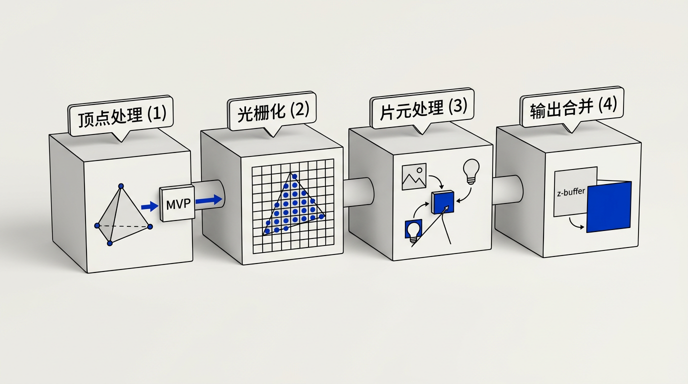

本讲义基于 Steve Marschner & Peter Shirley 所著《虎书》（Fundamentals of Computer Graphics）第5版第9章（p.194-220）图形管线。
现代 GPU 的完整管线——Bresenham直线、三角形光栅化、透视校正插值、z-buffer、顶点/片元着色器、抗锯齿（SSAA/MSAA/FXAA/TAA）、剔除（视锥/背面）。
本版插画采用 Guizang 材质插画风格重新绘制。

前面几章建立了我们所需的数学支架，现在让我们看看第二种主要的渲染方法：物体顺序渲染（object-order rendering）——将物体逐一绘制到屏幕上。与光线追踪不同——在光线追踪中我们逐个考虑每个像素、找出影响其颜色的物体——现在我们将逐个考虑每个几何物体，找出它可能影响的像素。找出图像中被某个几何图元占据的所有像素的过程叫做光栅化（rasterization），因此物体顺序渲染也可称为光栅化渲染（rendering by rasterization）。从物体出发、以更新图像中的像素为终点的操作序列，被称为图形管线（graphics pipeline）。
生活类比： 光栅化就像在一块方格纸上画三角形。你先画出三角形的轮廓点（顶点），然后"填空"——为三角形内部的所有方格涂上颜色。光线追踪则相反：你先看到每个方格（像素），再回头找"是哪个三角形的哪一部分出现在这个方格里"。光栅化的效率在于：一次遍历所有三角形，而不是为每个像素都重新搜索整个场景。
物体顺序渲染因其效率而取得巨大成功。对大型场景而言，数据访问模式的管理对性能至关重要——对整个场景做一次遍历、每块几何体只访问一次，相比反复搜索场景来获取着色每个像素所需的物体，具有显著优势。
本章标题暗示物体顺序渲染只有一种方法。当然，事实并非如此——目标和理念截然不同的两种图形管线分别是：通过 OpenGL 和 Direct3D 等 API 支持交互式渲染的 硬件管线（hardware pipeline），以及用于电影制作的软件管线（software pipeline），支持 RenderMan 等 API。硬件管线必须运行得足够快以便在游戏、可视化和用户界面中实时响应。制作管线必须以尽可能高的质量渲染动画和视觉特效，并能扩展到巨大场景，但可以花更长时间。本书重点关注硬件管线，同时也会指出一些关键差异。
想一想： 为什么电影渲染不直接用游戏引擎？因为它们的"时间观"完全不同。游戏需要每秒 60 帧，每帧只有 16ms；电影渲染一个像素可以花几分钟甚至几小时。这种差异决定了管线中几乎每一个设计选择——从精度到着色频率到光照模型。
光栅化（rasterization）是将连续的几何图元转换为离散像素集合的过程——为每个图元确定哪些像素被覆盖并生成相应的片元。它是整个图形管线中最重要的性能瓶颈，也是硬件实现最精密的阶段。任何图形系统都有一种或多种"图元对象"，更复杂的对象会被转化为这些图元。三角形是最常用的图元。基于光栅化的系统也被称为扫描线渲染器（scanline renderer）。
大多数图形软件包都有一个直线绘制命令，接收屏幕坐标上的两个端点（参见图 3.10）并在它们之间画一条线。例如，对端点 (1,1) 和 (3,2) 的调用将点亮像素 (1,1) 和 (3,2)，并填充它们之间的一个像素。对于一般的屏幕坐标端点 (x₀,y₀) 和 (x₁,y₁)，该例程应该绘制一条"合理的"近似两点之间直线的像素集合。绘制这种直线基于直线方程，我们有两种类型的方程可以选择：隐式和参数式。本节描述使用隐式直线的方法。
生活类比： 在方格纸上从左下角走到右上角。每一步你可以向右走一格，或者向右上方走一格（对角）。问题是要决定每一步何时该"向上爬"。Bresenham 算法就是一套聪明的规则：它悄悄跟踪你累积的"爬山需求"，当累积到半格以上就向上走，否则继续水平走。这套规则只需要整数加减法——连乘法都不用！
使用隐式方程绘制直线的最常见方法是中点算法（midpoint algorithm，Pitteway 1967; van Aken & Novak 1985）。中点算法最终绘制的直线与Bresenham 算法（Bresenham 1965）相同，但它更直观一些。
首先要找到直线的隐式方程，如第 2.7.2 节讨论的：
f(x,y) ≡ (y₀ − y₁)x + (x₁ − x₀)y + x₀y₁ − x₁y₀ = 0 (9.1)
我们假设 x₀ ≤ x₁。如果不成立，交换两点使其成立。直线的斜率 m 由下式给出：
m = (y₁ − y₀) / (x₁ − x₀)
下面的讨论假设 m ∈ (0, 1]。对于 m ∈ (−∞, −1]、m ∈ (−1, 0] 和 m ∈ (1, ∞) 的情况，可以推导出类似的算法。这四种情况覆盖了所有可能性。
对于 m ∈ (0, 1] 的情况，"水平移动"多于"垂直上升"——即直线在 x 方向比在 y 方向移动得更快。如果我们使用的 API 中 y 轴向下，我们可能担心这是否会使过程变难，但事实上我们可以忽略这个细节。我们可以忽略"上"和"下"的几何概念，因为这两种情况的代数完全相同。细心的读者可以验证得到的算法在 y 轴向下的情况下同样有效。中点算法的关键假设是我们要画出最细的直线。
想一想： 为什么要把直线分成四个八分圆（octant）来讨论？因为 Bresenham 算法的核心思想是"在移动更快的方向上以步长 1 前进，在另一个方向上决定是否需要额外步进"。如果直线更陡峭（|m| > 1），就把 y 当作主方向、交换 x 和 y 的角色即可。这种对称性是算法优雅的本质。
Bresenham 算法的完整推导和伪代码——决策变量 d 的递推公式：
对于斜率 m ∈ (0, 1] 的直线，算法以 x 为驱动方向。每一步 x 增加 1，需要判断 y 是否增加 1。我们已经画好了像素 (x, y)，下一个像素的选择取决于直线在 x+1 处究竟是更靠近 y 还是 y+1。
设隐式方程为 f(x,y) = Δy·x − Δx·y + C = 0（其中 Δx = x₁−x₀ > 0，Δy = y₁−y₀ > 0）。在候选像素的中点 (x+1, y+0.5) 处评估 f 值，作为决策变量 d：
d = f(x+1, y+0.5) = Δy·(x+1) − Δx·(y+0.5) + C
如果 d > 0，意味着中点在直线的下方（因为 f > 0 对应的半平面在直线下方），直线上穿过了中点，应选择 NE（东北方向，即 y+1）；如果 d ≤ 0，中点位于直线或直线上方，选择 E（东方向，即 y 不变）。
递推更新公式（核心优化）：
当选择 E（y 不变）时，x → x+1，y → y，下一个中点为 (x+2, y+0.5)：
d_new = Δy·(x+2) − Δx·(y+0.5) + C
= [Δy·(x+1) − Δx·(y+0.5) + C] + Δy
= d + Δy （增量 ΔE = Δy）
当选择 NE（y 增加 1）时，x → x+1，y → y+1，下一个中点为 (x+2, y+1.5)：
d_new = Δy·(x+2) − Δx·(y+1.5) + C
= [Δy·(x+1) − Δx·(y+0.5) + C] + Δy − Δx
= d + Δy − Δx （增量 ΔNE = Δy − Δx）
初始值（在 x₀ 处，第一个候选中点位于 (x₀+1, y₀+0.5)）：
d₀ = f(x₀+1, y₀+0.5) = Δy·(x₀+1) − Δx·(y₀+0.5) + C 请注意 f(x₀, y₀) = Δy·x₀ − Δx·y₀ + C = 0，因此： d₀ = Δy·(x₀+1) − Δx·(y₀+0.5) + C − [Δy·x₀ − Δx·y₀ + C] = Δy − Δx/2
为避免分数运算，将所有值乘以 2（用 2f 代替 f），初始 d₀ = 2Δy − Δx，增量也相应翻倍。最终算法只使用整数加减法和比较：
Bresenham 直线绘制算法（0 < m ≤ 1，整数运算版本）：
输入： 整数端点 (x₀, y₀) 和 (x₁, y₁)，其中 x₀ ≤ x₁ 且 0 ≤ y₁−y₀ ≤ x₁−x₀
输出： 近似直线的像素集合
Δx = x₁ − x₀
Δy = y₁ − y₀
d = 2Δy − Δx ← 初始决策变量（已乘2去分母）
y = y₀
for x = x₀ to x₁:
drawPixel(x, y)
if d > 0: ← 中点在线下方，选择 NE
y = y + 1
d = d + 2Δy − 2Δx ← 增量 ΔNE
else: ← 中点在线或直线上方，选择 E
d = d + 2Δy ← 增量 ΔE
这个算法之美在于：每次迭代只需一次比较、一次或两次加法——没有乘法、没有除法、没有浮点数。它是 1962 年时为早期绘图仪设计的，但至今仍是 GPU 硬件中直线光栅化的基础。
完整推导回顾（从隐式方程到整数递推）：
第1步——建立隐式直线方程。两点 (x₀,y₀) 和 (x₁,y₁) 之间的直线，其隐式形式为 f(x,y)=Ax+By+C=0，其中 A=y₀−y₁=−Δy，B=x₁−x₀=Δx（此处用了第2章符号的反号约定），C=x₀y₁−x₁y₀。更常用的等价形式——将符号反转可使 f>0 对应直线"上方"——是：
f(x,y) ≡ Δy·x − Δx·y + C = 0, 其中 Δx = x₁−x₀, Δy = y₁−y₀ (9.1r)
第2步——确定驱动方向。对于 0 < m ≤ 1（即 0 < Δy ≤ Δx），x 方向是"快轴"。每一步从 x 走到 x+1，y 要么保持不变（E 步），要么增加 1（NE 步）。判断依据是：在 x+1 处，直线 y 坐标的精确值是 y_exact = y₀ + m·(x+1−x₀)。NE 意味着 y+1 更接近 y_exact，E 意味着 y 更接近 y_exact——分界线在 y+0.5 处。
第3步——中点求值。候选像素的中点坐标为 (x+1, y+0.5)。将中点代入隐式方程得到决策变量 d（带分数 0.5 的原始版本）：
d_raw(x+1, y+½) = Δy·(x+1) − Δx·(y+½) + C
= Δy·x + Δy − Δx·y − Δx/2 + C
= (Δy·x − Δx·y + C) + Δy − Δx/2
= f(x,y) + Δy − Δx/2
如果当前已正确绘制了像素 (x,y)，则 f(x,y) 应为 0（该点恰在直线上），此时 d_raw = Δy − Δx/2。因此：若 d_raw > 0，直线在中点 下方（f>0 对应下半平面），应选 NE（往上走）；若 d_raw ≤ 0，直线在中点上方或恰在中点，选 E（保持水平）。这里的关键直觉：d_raw 度量的是"中点偏离直线的带符号距离"（乘以系数后的近似值）。
第4步——推导递推增量。这是算法性能的核心。假设当前已选定一个像素并知道其 d 值，我们需要计算下一个像素的 d 值——而不需要重新进行完整求值。
情况 A：选择 E（东方向，y 不变）。
当前状态: 像素P = (x, y), 决策变量 d = f(x+1, y+½)
选择E后: 下一个候选像素的中点变为 (x+2, y+½)
d_new = f(x+2, y+½)
= Δy·(x+2) − Δx·(y+½) + C
= Δy·x + 2Δy − Δx·y − Δx/2 + C
= [Δy·x + Δy − Δx·y − Δx/2 + C] + Δy
= d + Δy
↓
∴ 增量 ΔE = Δy (9.1a)
情况 B：选择 NE（东北方向，y + 1）。
当前状态: 像素P = (x, y), 决策变量 d = f(x+1, y+½)
选择NE后: 像素变为 (x+1, y+1), 下一个中点变为 (x+2, y+1½)
d_new = f(x+2, y+3/2)
= Δy·(x+2) − Δx·(y+3/2) + C
= Δy·x + 2Δy − Δx·y − 3Δx/2 + C
= [Δy·x + Δy − Δx·y − Δx/2 + C] + Δy − Δx
= d + Δy − Δx
↓
∴ 增量 ΔNE = Δy − Δx (9.1b)
第5步——消除分数，变为纯整数运算。原始决策变量 d_raw 的初始值是 Δy − Δx/2，包含除以 2。注意所有递推公式中 d 的变化量 ΔE = Δy 和 ΔNE = Δy − Δx 都是整数（因为 Δy 和 Δx 是整数）。因此可以将 d_raw 整体乘以 2，定义为 d = 2·d_raw，不影响符号判断（正负号不变）。乘以 2 后：
d₀ = 2·d_raw₀ = 2·(Δy − Δx/2) = 2Δy − Δx
选择E时: d_new = d + 2Δy （ΔE变成2倍）
选择NE时: d_new = d + 2Δy − 2Δx （ΔNE变成2倍）
判断条件: if d > 0: 选择NE (原始d_raw > 0等价于 d > 0)
else: 选择E (原始d_raw ≤ 0等价于 d ≤ 0)
第6步——完整伪代码（含边界条件预检查）：
Bresenham 中点算法（0 < m ≤ 1，纯整数版本）：
drawLine(int x0, int y0, int x1, int y1):
// 保证 x0 ≤ x1
if x0 > x1: swap(x0, x1); swap(y0, y1)
Δx = x1 − x0
Δy = y1 − y0
y = y0
d = 2·Δy − Δx // 初始决策变量（已乘2）
for x = x0 to x1:
drawPixel(x, y)
if d > 0: // 中点在直线下方 → 向上走
y = y + 1
d = d + 2·Δy − 2·Δx // = d − 2·(Δx − Δy)，等价形式
else: // 中点在直线上方或恰在中点 → 保持
d = d + 2·Δy
复杂度: N次迭代, N次drawPixel, 每次1次比较+1~2次加法。
空间复杂度: O(1) —— 只用了几个整数寄存器。
第7步——全部八个八分圆的处理。上述推导假设 0 < m ≤ 1 且 x₀ < x₁。完整的直线绘制算法需要处理所有八种斜率情况：
八分圆分类（以 (x₀,y₀) 为原点）： 八分圆 | 斜率范围 | 驱动轴 | 步进方向 | 对称策略 --------|-------------|---------|-----------|------------------------- 0 | 0 ≤ m ≤ 1 | x | y++/不变 | 原算法（本章推导） 1 | 1 < m < ∞ | y | x++/不变 | 交换 x↔y 角色，用 y 驱动 2 | −∞ < m < −1 | y | x--/不变 | 交换 x↔y，x 递减 3 | −1 ≤ m < 0 | x | y--/不变 | Δy 取绝对值，y 递减 —— | —— | —— | —— | 斜率绝对值相同的其余4个镜像 通用处理： - 设主坐标 p = (主轴坐标)，副坐标 q = (副轴坐标) - 绝对值 Δp = |p₁−p₀|, Δq = |q₁−q₀| - 递推公式完全相同（用 Δp 替代 Δx, Δq 替代 Δy） - 仅需在主循环中根据八分圆决定 q 是递增还是递减
Bresenham 算法在 GPU 硬件中的对应：现代 GPU 的光栅化器并不使用传统的 Bresenham 逐像素循环算法——因为 GPU 需要一次处理多个像素（并行）。取而代之的是基于边界方程的半平面测试方法（见 9.1.2 节），但 Bresenham 的核心理念——增量计算与误差累积——是所有光栅化算法的灵魂。某种意义上，三角形光栅化中的"边函数增量更新"就是 Bresenham 算法的 2D 泛化。
想一想： 如果说 Bresenham 算法只是为直线设计的，为什么理解它仍然重要？因为它揭示了一个通用原理——用增量更新代替独立重算。三角形光栅化中的重心坐标增量更新、z 缓冲中的深度插值、甚至机器学习中的梯度下降，全都使用了相同的"累计误差、仅在超过阈值时修正"的思想。Bresenham 的 d 变量本质上是一个离散积分器。
我们经常需要在屏幕坐标中绘制一个由三个二维点 p₀ = (x₀,y₀)、p₁ = (x₁,y₁) 和 p₂ = (x₂,y₂) 定义的三角形。这与直线绘制问题类似，但有其独特之处。与直线绘制一样，我们可能希望对顶点处的颜色或其他属性进行插值。如果我们有重心坐标（第 2.9 节），这就很简单了。例如，如果顶点有颜色 c₀、c₁ 和 c₂，三角形内重心坐标为 (α, β, γ) 的点颜色为：
c = α·c₀ + β·c₁ + γ·c₂
这种颜色插值在图形学中被称为Gouraud 插值（Gouraud interpolation），以其发明者命名（Gouraud 1971）。
生活类比： 重心坐标就像制作混合果汁。如果你把橙汁(c₀)、苹果汁(c₁)和葡萄汁(c₂)倒进一个杯子，它们各自的"占比" α、β、γ（加起来等于 100%）就决定了最终饮品的颜色。杯子里的任何一口都对应三角形内的一个点——靠近某个顶点就更多地尝到那种果汁的味道。α = 0.5, β = 0.3, γ = 0.2 意味着"半杯橙汁 + 三成苹果汁 + 两成葡萄汁"的交汇点。
三角形光栅化的另一个微妙之处在于：我们通常要光栅化的是共享顶点和边的三角形。这意味着我们希望相邻三角形的光栅化不留缝隙。我们可以用中点算法画出每个三角形的轮廓，然后填充内部像素。但这意味着相邻三角形会在每条边上绘制相同的像素。如果相邻三角形颜色不同，图像将取决于两个三角形的绘制顺序。避免顺序问题和消除缝隙的最常见做法是采用这样的约定：当且仅当像素中心位于三角形内部时才绘制该像素——即像素中心的重心坐标全部在 (0, 1) 区间内。这引出了一个问题：如果中心恰好落在三角形边上该怎么办？本节稍后将讨论几种处理方式。关键观察是：重心坐标既能用来判定是否绘制某个像素，也能用来计算该像素应该是什么颜色（如果我们在插值顶点颜色的话）。所以三角形光栅化问题归结为高效地找出像素中心的重心坐标（Pineda 1988）。
暴力光栅化算法如下：
for all x do
for all y do
compute (α, β, γ) for (x, y)
if (α ∈ [0, 1] and β ∈ [0, 1] and γ ∈ [0, 1]) then
c = α·c₀ + β·c₁ + γ·c₂
drawPixel(x, y) with color c
剩余的算法将外层循环限制在一个更小的候选像素集合中，并高效地计算重心坐标。包围盒优化：我们可以找出三个顶点的包围矩形，只对该矩形内的像素进行循环测试。利用公式 (2.32) 计算重心坐标，得到以下算法：
三角形光栅化算法（带包围盒优化）：
x_min = floor(xᵢ) y_min = floor(yᵢ)
x_max = ceiling(xᵢ) y_max = ceiling(yᵢ)
f_α = f₁₂(x₀, y₀) ← 预计算分母（常量）
f_β = f₂₀(x₁, y₁)
f_γ = f₀₁(x₂, y₂)
for y = y_min to y_max do
for x = x_min to x_max do
α = f₁₂(x, y) / f_α
β = f₂₀(x, y) / f_β
γ = f₀₁(x, y) / f_γ
if (α > 0 and β > 0 and γ > 0) then
c = α·c₀ + β·c₁ + γ·c₂
drawPixel(x, y) with color c
其中 fᵢⱼ 是使用相应顶点按公式 (9.1) 给出的直线函数：
f₀₁(x,y) = (y₀ − y₁)x + (x₁ − x₀)y + x₀y₁ − x₁y₀ f₁₂(x,y) = (y₁ − y₂)x + (x₂ − x₁)y + x₁y₂ − x₂y₁ f₂₀(x,y) = (y₂ − y₀)x + (x₀ − x₂)y + x₂y₀ − x₀y₂
注意我们把 α ∈ (0, 1) 的测试替换成了 α > 0，因为如果 α、β、γ 全部为正，则它们全部小于 1（因为 α+β+γ = 1）。我们也可以只计算三个重心坐标中的两个，然后通过该关系得到第三个，但一旦算法变为增量式（如直线绘制算法那样），这样做未必节省计算。每个 α、β、γ 的计算是 f(x,y) = Ax + By + C 的形式。在内层循环中，只有 x 变化，每次变化 1。注意 f(x+1, y) = f(x, y) + A——这就是增量算法的基础。在外层循环中，评估从 f(x, y) 变为 f(x, y+1)，同样可以高效处理。因为 α、β、γ 在循环中以恒定的增量变化，颜色 c 也同样变化。因此颜色也可以做成增量式的。例如，像素 (x+1, y) 的红色值与像素 (x, y) 的红色值相差一个可以预计算的常量。
想一想： 为什么三角形光栅化的性能如此依赖于增量计算？如果对包围盒内的每个像素都从头重算重心坐标，那对于 100×100 的包围盒意味着 10,000 次完整的重心坐标计算。通过增量更新（f(x+1, y) = f(x, y) + A），每次只需一次加法。这不仅仅是 10,000 倍的差异——它还消除了所有乘法和除法。GPU 的光栅化器本质上就是这种增量逻辑的大规模并行硬件实现。
边界方程 e(x,y) = Ax + By + C 的完整符号约定和推导：
三角形光栅化的现代方法（Pineda 1988）并不直接计算重心坐标，而是使用三条有向边的边界方程（edge equations）——本质上是 9.1.1 节隐式直线方程的推广。对于由三个顶点 p₀=(x₀,y₀)、p₁=(x₁,y₁)、p₂=(x₂,y₂) 按逆时针（CCW）顺序定义的三角形，三条边的边界方程定义如下：
边 e₀₁（p₀→p₁，逆时针包围时三角形在右侧）: e₀₁(x,y) = (y₀ − y₁)·x + (x₁ − x₀)·y + (x₀·y₁ − x₁·y₀) 边 e₁₂（p₁→p₂）: e₁₂(x,y) = (y₁ − y₂)·x + (x₂ − x₁)·y + (x₁·y₂ − x₂·y₁) 边 e₂₀（p₂→p₀）: e₂₀(x,y) = (y₂ − y₀)·x + (x₀ − x₂)·y + (x₂·y₀ − x₀·y₂)
符号约定——关键来自顶点顺序：当三角形顶点按逆时针（CCW）顺序排列（在屏幕空间中 y 轴向上的标准约定），对三角形内部的任意一点 p，三条边方程的值均为正（即 e₀₁(p) > 0、e₁₂(p) > 0、e₂₀(p) > 0）。反之，若顶点按顺时针排列，三个值均为负。可以用以下方式验证：取三角形的质心 (p₀+p₁+p₂)/3，计算三条边方程的值，符号即指示内部对应的一侧。
用边界方程判断覆盖率：像素中心 p = (x+0.5, y+0.5) 在三角形内部 ⇔ 三条边方程的值全部同号（都 > 0 或都 < 0，取决于顶点绕序）。这在 GPU 硬件中的实现极其高效：三条边的系数 A、B、C 被加载到寄存器中，通过乘法和加法并行计算；对于相邻像素，只需增量更新（e(x+1,y) = e(x,y) + A），无需新的乘法。
边界方程与重心坐标的关系：注意 e₁₂(p₀)、e₂₀(p₁)、e₀₁(p₂) 分别是 9.1.2 节算法中 f_α、f_β、f_γ 的分子部分。实际上，对于 CCW 三角形：
α = e₁₂(x,y) / e₁₂(p₀) β = e₂₀(x,y) / e₂₀(p₁) γ = e₀₁(x,y) / e₀₁(p₂)
这个关系揭示了三角形光栅化的统一观点：边界方程就是未除法的重心坐标。GPU 光栅化器内部正是以边界方程为核心的——硬件固定功能单元并行计算每条边的 Ax+By+C，然后用符号测试决定覆盖。
处理三角形边上的像素——平局决胜规则：
我们还没有讨论如果像素中心恰好落在三角形边上该怎么办。如果像素恰好在一条边上，那么如果存在相邻三角形，它也位于相邻三角形的边上。没有明显的方法将该像素分配给这个或那个三角形。最坏的决策是不绘制该像素——这会导致两个三角形之间出现缝隙。较好但仍有问题的做法是让两个三角形都绘制该像素——如果三角形是透明的，将导致双重着色。我们真正想要的是将该像素分配给恰好一个三角形，并且希望这个过程是简单的；选择哪个三角形并不重要，只要该选择是明确定义的。
生活类比： 想象两个相邻省份共享一条边界。边界线上的那户人家该归哪个省？关键是规则必须一致且无歧义——比如"边界线以南归A省，以北归B省"。不能两家都不收（无主之地），也不能两家都收（双重户籍）。图形学中，这个规则的执行者是"离屏参考点"——一个远在屏幕外的裁判，用它来判决像素该归谁。
离屏参考点平局决胜——完整推导：
考虑三角形 T₁ 与相邻三角形 T₂ 共享一条边 e，由顶点 a 和 b 定义。边 e 将平面分为两个半平面：一侧包含 T₁ 的第三个顶点 v₁，另一侧包含 T₂ 的第三个顶点 v₂。当一个像素中心 p 恰好落在边 e 上时，e(p) = 0——边界方程无法区分 p 属于哪一侧。
核心思想：选取一个固定不变的"裁判"——离屏参考点 R。对于任意在边 e 上的点 p，如果 R 位于边 e 的同一侧（即第三顶点 v 所在的一侧），则将 p 分配给该三角形。数学表示：
如果 e(p) = 0（像素中心恰好在边上）：
如果 e(R) 与 e(v) 同号——即 e(R)·e(v) > 0——则 p 属于此三角形
否则 p 不属于此三角形
为什么选择 (−1, −1)？离屏参考点必须是任意一个固定且位于屏幕之外的点，以确保对屏幕上的所有三角形保持一致的裁判标准。(−1, −1) 是一个自然的选择，因为它在屏幕坐标系原点 (0,0) 的左上方——永远位于任何可见屏幕像素之外。只要三角形不在 (−1, −1) 处有顶点（对于屏幕空间三角形这不可能），该参考点就能提供一致的判断。
完整平局决胜逻辑的形式推导：对于三角形 T（CCW 顶点顺序），像素 (x,y) 被判定为内部的条件逐边展开为：
边 e₀₁ (顶点0→1, 第三顶点为 p₂):
(e₀₁(p) > 0) OR (e₀₁(p) = 0 AND e₀₁(p₀) · e₀₁(-1,-1) ≥ 0)
↑ 两侧符号相同意味着什么？
解释：e₀₁(p₀) 是第三顶点 p₂ 在边 e₀₁ 处的带符号距离。
e₀₁(-1,-1) 是参考点在边 e₀₁ 处的带符号距离。
若两者同号，说明参考点和第三顶点在边的同一侧，
→ 像素应归此三角形（因为边的那一侧是"内侧"）。
边 e₁₂ (顶点1→2, 第三顶点为 p₀):
(e₁₂(p) > 0) OR (e₁₂(p) = 0 AND e₁₂(p₁) · e₁₂(-1,-1) ≥ 0)
边 e₂₀ (顶点2→0, 第三顶点为 p₁):
(e₂₀(p) > 0) OR (e₂₀(p) = 0 AND e₂₀(p₂) · e₂₀(-1,-1) ≥ 0)
为什么不是"完美"的？如果边 e 的延长线恰好经过 (−1, −1) 点，那么 e(−1,−1) = 0，同号测试失效。这是极罕见的情况——该边需要满足 Ax+By+C=0 且 (x,y)=(−1,−1) 在其中——实际场景中几乎不会遇到。即使遇到，仅对该特殊边退化为"两个三角形都不绘制该边的像素"（极小缝隙），而绝大多数边的像素仍然被正确分配。
注意：上述推导依赖两个三角形在边界上的边方程完全相同——只有当两个三角形在绘制调用中以相同顺序列出共享顶点时才是这种情况（如 T₁ 有顶点 a→b→v₁，T₂ 必须有顶点 b→a→v₂，点 b 和 a 在两个三角形中出现的顺序关于边方向一致）。如果顺序相反，方程会翻转符号，测试将出错。OpenGL/D3D 的实现通过在更早阶段（顶点处理或图元组装）确保一致的绕序来避免此问题。
我们还没有讨论如果像素中心恰好落在三角形边上该怎么办。如果像素恰好在一条边上，那么如果存在相邻三角形，它也位于相邻三角形的边上。没有明显的方法将该像素分配给这个或那个三角形。最坏的决策是不绘制该像素——这会导致两个三角形之间出现缝隙。较好但仍有问题的做法是让两个三角形都绘制该像素——如果三角形是透明的，将导致双重着色。我们真正想要的是将该像素分配给恰好一个三角形，并且希望这个过程是简单的；选择哪个三角形并不重要，只要该选择是明确定义的。
生活类比： 想象两个相邻省份共享一条边界。边界线上的那户人家该归哪个省？关键是规则必须一致且无歧义——比如"边界线以南归A省，以北归B省"。不能两家都不收（无主之地），也不能两家都收（双重户籍）。图形学中，这个规则的执行者是"离屏参考点"——一个远在屏幕外的裁判，用它来判决像素该归谁。
一种处理方法是注意到任何一个离屏点都确定位于共享边的某一侧——我们将其选择为要绘制的那一侧。对于两个互不重叠的三角形，不在边上的顶点分别位于边的两侧。恰好其中一个不在边上的顶点与离屏点在边的同一侧（图 9.6）。这就是测试的基础。测试两个数 p 和 q 是否同号可以实现为对 pq > 0 的测试，这在大多数环境中非常高效。
注意该测试并不完美，因为穿过边的直线也可能穿过离屏点，但我们至少大幅减少了有问题的情形。使用哪个离屏点是任意的，(x, y) = (−1, −1) 和其他选择一样好。我们需要为点恰好落在边上的情况添加一个检查。我们希望这个检查在常见情形的完全内部或外部测试中不会被触发。
完整的带平局决胜的三角形光栅化算法：
带平局决胜的三角形光栅化算法（防止缝隙和双重绘制）：
f_α = f₁₂(x₀, y₀) ← 边的隐式直线函数在第三顶点处的值
f_β = f₂₀(x₁, y₁)
f_γ = f₀₁(x₂, y₂)
for y = y_min to y_max do
for x = x_min to x_max do
α = f₁₂(x, y) / f_α
β = f₂₀(x, y) / f_β
γ = f₀₁(x, y) / f_γ
if (α ≥ 0 and β ≥ 0 and γ ≥ 0) then
if (α > 0 or f_α · f₁₂(−1, −1) > 0) and
(β > 0 or f_β · f₂₀(−1, −1) > 0) and
(γ > 0 or f_γ · f₀₁(−1, −1) > 0) then
c = α·c₀ + β·c₁ + γ·c₂
drawPixel(x, y) with color c
伪代码前四行必须仔细编码以处理边恰好穿过像素中心的情况。只有当两个三角形使用完全相同的直线方程时，上述代码才能消除缝隙和双重绘制。事实上，只有当两个共享顶点在两个三角形的绘制调用中具有相同的顺序时，直线方程才是相同的。否则，方程可能会翻转符号。这可能是个问题，取决于编译器是否改变运算顺序。因此，如果需要健壮的实现，可能需要检查编译器和算术单元的细节。
除了适合增量实现外，还有几个潜在的早期退出点。例如，如果 α 为负，就没必要计算 β 或 γ。虽然这可能带来速度提升，但性能分析总是个好主意：额外的分支可能减少流水线或并发性，反而使代码变慢。一如既往，如果代码是关键部分，请测试任何看起来吸引人的优化。
上述代码的另一个细节是：对退化三角形（即 f_γ = 0 的情况），除法可能是除以零。应该妥善处理浮点错误条件，或添加额外的测试。
在插值那些需要在三维三角形上线性变化的量（如纹理坐标或三维位置）时，要得到外观正确的透视效果存在一些微妙之处。我们以纹理坐标作为需要透视校正的量的例子，但同样的考虑适用于任何在三维空间中需要保持线性关系的属性。
生活类比： 想象站在一条铁轨上看向远方。枕木在近处间隔很大，但越远越密集。如果你在屏幕上（二维）做等间隔插值，远处的枕木会和近处的枕木看起来一样宽——这是错的。透视校正插值就是"除以深度"的技巧：先把纹理坐标除以深度（得到 a/w），在屏幕空间线性插值 a/w 和 1/w，然后在每个像素处通过除法恢复真实值。就像用一张"深度加权的地图"来代替直接丈量距离。
事情不那么直接的原因是：仅在屏幕空间中对纹理坐标进行插值会导致不正确的图像，如图 9.7 的网格纹理所示。因为在透视中，物体离观察者越远就越小，三维空间中均匀分布的线条在二维图像空间中应该被压缩。需要更仔细地插值纹理坐标来实现这一点。
我们可以通过插值 (u, v) 坐标来实现三角形上的纹理映射（修改 9.1.2 节的光栅化方法），但这会导致图 9.7 右半部分所示的问题。如果使用屏幕空间重心坐标，如下面光栅化代码所示，三角形也会出现类似的问题：
for all x do
for all y do
compute (α, β, γ) for (x, y)
if α ∈ (0, 1) and β ∈ (0, 1) and γ ∈ (0, 1) then
t = α·t₀ + β·t₁ + γ·t₂
drawPixel(x, y) with color texture(t) ——对实体纹理
or with texture(β, γ) ——对二维纹理
这段代码会生成图像，但有问题。要解析基本问题，考虑从世界空间 q 到齐次点 r 再到齐次化点 s 的变换序列：
[x_q] [x_r] [x_r/h_r] [x_s] [y_q] 变换 [y_r] 齐次化 [y_r/h_r] [y_s] [z_q] ———→ [z_r] ———→ [z_r/h_r] = [z_s] [ 1 ] [h_r] [ 1 ] [ 1 ]
纹理坐标插值问题的最简形式是：当我们有与两个点 q 和 Q 关联的纹理坐标 (u, v)，需要在图像中沿 s 和 S 之间的线段生成纹理坐标。如果世界空间中的点 q'（位于 q 和 Q 之间的线段上）投影为屏幕空间中的点 s'（位于 s 和 S 之间的线段上），那么这两个点应该具有相同的纹理坐标。
朴素的屏幕空间方法（体现于上述算法）声称在点 s' = s + α(S − s) 处，我们应该使用纹理坐标 u_s + α(u_S − u_s) 和 v_s + α(v_S − v_s)。这不能正确工作，因为变换到 s' 的世界空间点 q' 不是 q + α(Q − q)。
然而我们从第 8.4 节知道，线段 q 到 Q 上的点确实会落在 s 和 S 之间的线段上的某处；事实上，线段 q 到 Q 上的点在屏幕空间中以 α 为参数的插值量是线性的，只要这些量是在齐次除法之前取的。具体来说，如果我们在齐次除法之前插值值 a_r 和 h_r（即 a 的齐次坐标版本和齐次除数 h_r），然后在每个片元处除以 h_r，就能得到正确的透视插值。
透视校正插值的推导：
设世界空间线段 q 到 Q 上的参数为 t ∈ [0, 1]，对应的屏幕空间点在 s 到 S 上的参数为 α(t)。由于 1/w 在屏幕空间中线性，我们有：
1/w(t) = 1/w₀ + t · (1/w₁ − 1/w₀) （世界空间线性）
对于任意属性 a（如纹理坐标 u），a/w 在屏幕空间中也是线性的：
(a/w)(α) = (a₀/w₀) + α · ((a₁/w₁) − (a₀/w₀)) （屏幕空间线性插值）
在每个片元处，通过除法恢复 a 的真实值：
a = (a/w) / (1/w)
要验证这一点的正确性，我们可以检查在屏幕空间中插值 1/w_r 是否确实得到了世界空间中 w_r 的插值后的倒数。确认（练习 2）：
(1/w_r) + α(t) · (1/w_R − 1/w_r) = 1 / [w_r + t(w_R − w_r)] (9.4)
记住 α(t) 和 t 的关系由公式 9.2 给出。
想一想： 为什么 a/w 是线性而 a 本身不是？在透视投影下，世界空间的等间隔点在屏幕空间中越来越密。除以 w（深度）是一种"反压缩"操作——它把被透视压缩过的坐标展开回线性世界。这就像用橡皮筋绑住本子：如果你知道橡皮筋在某处的拉伸比例（1/w），就可以通过拉伸还原本来的间距（a = (a/w)/(1/w)）。
在变换后的空间中线性插值 1/w_r 不出错的能力使我们能够正确地为三角形贴纹理。我们可以利用这些事实来修改三个点 tᵢ = (xᵢ, yᵢ, zᵢ, wᵢ) 的扫描转换代码（这些点已通过视图矩阵但尚未齐次化），并附有纹理坐标 tᵢ = (uᵢ, vᵢ)：
透视校正纹理映射算法（在齐次除法之前）：
for all x_s do
for all y_s do
compute (α, β, γ) for (x_s, y_s)
if (α ∈ [0, 1] and β ∈ [0, 1] and γ ∈ [0, 1]) then
u_s = α·(u₀/w₀) + β·(u₁/w₁) + γ·(u₂/w₂) ← 插值 u/w
v_s = α·(v₀/w₀) + β·(v₁/w₁) + γ·(v₂/w₂) ← 插值 v/w
one_s = α·(1/w₀) + β·(1/w₁) + γ·(1/w₂) ← 插值 1/w
u = u_s / one_s ← 恢复真实 u
v = v_s / one_s ← 恢复真实 v
drawPixel(x_s, y_s) with color texture(u, v)
当然，伪代码中出现的许多表达式会在循环外预计算以提高速度。在实践中，现代系统以透视校正的方式插值所有属性，除非特别请求使用其他方法。
这个额外参数（值恒为 1）的目的是：一旦我们有了 u/w_r、v/w_r 和 1/w_r，就可以轻松地通过除法恢复 (u, v)。该技术的实际含义是：我们可以根据 (x_s, y_s) 的值来插值所有这些量——包括用于 z 缓冲的 z_s 值。朴素方法的问题仅仅在于我们插值的分量选择不一致——只要涉及的量全部来自透视除法之前或全部来自之后，一切都会正常。
恢复公式 a = (a/w) / (1/w) 的完整五步推导：
设属性 a 在世界空间三角形上随参数 t 线性变化：a(t) = a₀ + t(a₁ − a₀)。这些世界空间点分别投影到屏幕空间——透视除法 (x/w, y/w) 将世界空间的均匀变化压缩到屏幕空间的非均匀变化。我们想要在每个屏幕像素处恢复 a 的真实世界空间值。
推导框架：假设我们已知三个顶点在裁剪空间中的齐次坐标为 (xᵢ, yᵢ, zᵢ, wᵢ)，对应的屏幕位置为 (xᵢ/wᵢ, yᵢ/wᵢ)。对于任意属性 a（纹理坐标 u/v、颜色、法线等），顶点处的 aᵢ 已知。
第1步 — 关键观察：a/w 在屏幕空间是线性的。
证明：世界空间中的线性函数 a(p) 通过透视投影映射后，
a/w 在剪裁到屏幕空间的映射下保持线性。
这是从 8.4 节得出的核心结论——可以在齐次除法之前
（即 4D 齐次空间）安全插值，因为齐次坐标中的线性插值
经过除法后变为在屏幕空间中对 a/w 的线性插值。
第2步 — 在屏幕空间中插值 a/w 和 1/w。
使用 9.1.2 节计算的重心坐标 (α, β, γ)（屏幕空间），
我们在屏幕上每个像素处插值两个量：
a/w(α) = α·(a₀/w₀) + β·(a₁/w₁) + γ·(a₂/w₂)
1/w(α) = α·(1/w₀) + β·(1/w₁) + γ·(1/w₂)
这两个量都是屏幕空间重心坐标的线性函数，
因此可以使用包围盒 + 增量更新高效计算。
第3步 — 为什么需要 1/w？因为 w 本身不是线性的。
在透视投影下，w 在世界空间是线性的（w = w₀ + t(w₁−w₀)），
但在屏幕空间中 w 不是线性的——1/w 才是线性的。
所以我们需要插值 1/w 而不是插值 w。
第4步 — 通过除法恢复真实属性值。
在每个片元处：
a = (a/w) / (1/w)
这恢复了 a 的真实世界空间值，且结果在三角形上线性。
验证：如果 a₀ = a₁ = a₂（常数属性），则 a/w 和 1/w 的
插值各自均匀，恢复的 a 在所有片元中为常数——正确。
第5步 — 推广到所有顶点属性。
同样的技术适用于所有需要在三角形上线性插值的属性：
- 纹理坐标 (u, v)：插值 u/w, v/w, 1/w，每片元恢复 u, v
- 法线 (nₓ, n_y, n_z)：插值 nₓ/w, n_y/w, n_z/w, 1/w
- 颜色 (r, g, b)：插值 r/w, g/w, b/w, 1/w
- 深度 (z)：插值 z/w 和 1/w，恢复 z = (z/w)/(1/w)
- 世界空间位置 (pₓ, p_y, p_z)：同样恢复
GPU 纹理单元硬件实现原理：
现代 GPU 的透视校正插值由专用硬件——属性插值器（attribute interpolator）和纹理采样单元（texture sampling unit）——协同完成，流程如下：
GPU 透视校正纹理映射的硬件数据流：
顶点着色器输出（每个顶点）:
┌──────────────────────────────────────────────┐
│ position: (x, y, z, w) ← 裁剪空间坐标 │
│ texcoord: (u, v) ← 纹理坐标（属性 a） │
└──────────────────────────────────────────────┘
↓
[图元组装] → 将三个顶点组装为三角形
↓
[视口变换 + 透视除法] → 得到屏幕空间 (X, Y, Z)
↓
[光栅化器 — 固定功能硬件]:
1. 三角形设置: 从三个顶点计算边方程系数 A,B,C
2. 遍历: 以 2×2 像素四方块为粒度，并行计算边方程 → 覆盖判定
3. 每个覆盖的像素块 → 计算屏幕空间重心坐标 (α, β, γ)
↓
[属性插值器 — 专用硬件流水线]:
4a. 使用重心坐标插值 u/w, v/w, 1/w（每个属性2个FP32单元）
u_over_w = α·(u₀/w₀) + β·(u₁/w₁) + γ·(u₂/w₂)
v_over_w = α·(v₀/w₀) + β·(v₁/w₁) + γ·(v₂/w₂)
one_over_w = α·(1/w₀) + β·(1/w₁) + γ·(1/w₂)
4b. 透视校正恢复（浮点除法/倒数单元）:
u_true = u_over_w / one_over_w
v_true = v_over_w / one_over_w
4c. 输出到片元着色器作为"透视校正的插值属性"
↓
[片元着色器]:
5. 使用 u_true, v_true 作为纹理坐标
调用 texture2D(sampler, vec2(u_true, v_true))
↓
[纹理单元 (TMU) — 专用硬件]:
6a. LOD计算: 根据相邻像素的纹理坐标偏导数
du/dx, du/dy, dv/dx, dv/dy → 确定mipmap层级
6b. 地址生成: (u_true, v_true) → 内存中的纹理坐标地址
6c. 纹理缓存查找: L1缓存 → L2缓存 → 显存
6d. 双线性/三线性/各向异性滤波: 从邻近纹素插值最终颜色
6e. 返回滤波后的颜色值给片元着色器
为什么这如此高效？
GPU 硬件做了多项关键优化：
实际限制：朴素屏幕空间插值（不校正）有时仍然有用——当 w 近似为一个常数时（如正射投影，所有顶点的 w 分量相同），a/w 和 a 的插值等价，可以跳过校正以节省硬件资源。这就是为什么某些着色器有 noperspective 关键字——显式请求不进行透视校正。
简单地将图元变换到屏幕空间然后光栅化本身是不够的。这是因为位于视图体外的图元——特别是位于眼睛后方的图元——可能最终被光栅化，导致错误的结果。例如，考虑图 9.9 中所示的三角形。两个顶点在视图体内，但第三个顶点在眼睛后方。投影变换将该顶点映射到远平面后方的一个荒谬位置，如果允许这种情况发生，三角形将被错误地光栅化。因此，光栅化之前必须进行裁剪（clipping）操作，移除图元中可能延伸到眼睛后方的部分。
生活类比： 裁剪就像用一把剪刀沿着相机的"视锥体边界"修剪场景。如果一棵树只有一半在相机视野内，你只画看得见的那一半——把看不见的另一半剪掉。这比渲染后再检查"哪些像素属于屏幕外"高效得多，因为在裁剪阶段，整个三角形可能被直接丢弃，完全跳过后续所有处理。
裁剪是图形学中的常见操作，每当一个几何实体"切割"另一个实体时都需要它。例如，如果你用平面 x = 0 裁剪一个三角形，如果顶点的 x 坐标符号不全相同，该平面会将三角形切为两部分。在大多数裁剪应用中，三角形位于平面"错误"一侧的部分被丢弃。对单个平面的这种操作如图 9.10 所示。
在为光栅化做准备的裁剪中，"错误"一侧是视图体之外的一侧。裁剪掉视图体外的所有几何体总是安全的——即对体积的全部六个面进行裁剪——但许多系统只对近平面进行裁剪就能应付。
本节讨论裁剪模块的基本实现。对实现工业级速度的裁剪器感兴趣的读者应参考本章末尾注释中提到的 Blinn 的书。
实现裁剪的两种最常见方法是：
两种方法都可以使用以下针对每个三角形的流程来有效实现（J. Blinn 1996）：
Sutherland-Hodgman 风格裁剪流程：
for each of six planes do
if (triangle entirely outside of plane) then
break (triangle is not visible) ← 平凡拒绝
else if triangle spans plane then
clip triangle
if (quadrilateral is left) then
break into two triangles
方法一——世界坐标裁剪：在实践中，六个平面仅在渲染单张图像时需要改变，因此我们不需要非常高效地计算它们。为此，我们可以简单地将图 7.12 所示的变换求逆，并将其应用于变换后的视图体的八个顶点：
(x, y, z) = (l, b, n) (r, b, n) (l, t, n) (r, t, n)
(l, b, f) (r, b, f) (l, t, f) (r, t, f)
平面方程可以由此推导出来。或者，我们可以使用向量几何直接从视图参数得到平面。
方法二——齐次坐标裁剪：
令人惊讶的是，通常实际采用的选择是在除法之前于齐次坐标中进行裁剪。这里视图体是 4D 的，它由 3D 体积（超平面）界定。这些是：
−x + l·w = 0 x − r·w = 0 −y + b·w = 0 y − t·w = 0 −z + n·w = 0 z − f·w = 0
这些平面非常简单，因此效率优于方法一。通过将视图体 [l, r] × [b, t] × [f, n] 变换到 [0, 1]³，还可以进一步改进。结果是，在 4D 中进行三角形裁剪并不比在 3D 中更复杂。
想一想： 为什么要在 4D 齐次坐标中裁剪而不是在 3D 世界坐标中？关键原因：在齐次除法之前裁剪可以避免除以零和符号翻转问题。如果某个顶点在眼睛后方（w < 0），先裁剪掉它再除法，剩下的顶点都有 w > 0——除法安全了。而且 4D 裁剪平面的方程极其简单（例如 −x + lw = 0），在硬件实现中非常省事。
对单个平面裁剪：
无论选择哪种方案，我们都必须对一个平面进行裁剪。回顾第 2.7.5 节，过点 q 且法线为 n 的平面的隐式方程为：
f(p) = n · (p − q) = 0
这通常写作：
f(p) = n · p + D = 0 (9.5)
有趣的是，这个方程不仅描述三维平面，也描述二维直线和四维空间中平面状的体积体。所有这些实体通常在各自维度中都被称为"平面"。
如果我们有两点 a 和 b 之间的线段，可以使用第 12.4.3 节中描述的为 BSP 树程序切割三维三角形边的技术，对其做平面裁剪。这里，通过检查 f(a) 和 f(b) 是否有不同的符号，测试点 a 和 b 是否在平面 f(p) = 0 的相反两侧。通常，f(p) < 0 被定义为平面"内侧"，f(p) > 0 为"外侧"。如果平面确实分割了线段，我们可以代入参数直线方程求解交点：
p = a + t(b − a)
代入 f(p) = 0（公式 9.5）：
n · (a + t(b − a)) + D = 0
求解 t：
t = (n · a + D) / (n · (a − b))
然后我们就可以找到交点并将线段"缩短"。裁剪三角形时，我们同样可以按照第 12.4.3 节的方法来产生一个或两个三角形。
Sutherland-Hodgman 六平面依次裁剪——完整流程详解：
Sutherland-Hodgman 算法（Sutherland & Hodgman 1974）是图形管线裁剪阶段的核心。该算法将裁剪视为一个"流水线过滤器"：依次用每个裁剪面处理当前的多边形顶点列表，输出裁剪后的新顶点列表，作为下一个裁剪面的输入。对三角形而言，经过六个面的裁剪后，输出一个封闭的凸多边形（最多六边形），随后被三角剖分为三角形。
Sutherland-Hodgman 剪裁流水线（6平面）：
输入三角形 △(v₀, v₁, v₂)
↓
[平面 1: 左平面 −x + lw = 0] → 输出多边形 P₁
↓
[平面 2: 右平面 x − rw = 0] → 输出多边形 P₂
↓
[平面 3: 底平面 −y + bw = 0] → 输出多边形 P₃
↓
[平面 4: 顶平面 y − tw = 0] → 输出多边形 P₄
↓
[平面 5: 近平面的 −z + nw = 0] → 输出多边形 P₅
↓
[平面 6: 远平面的 z − fw = 0] → 输出多边形 P₆ = 最终裁剪结果
单个平面的裁剪算法（以平面 −x + lw = 0 为例）：
函数 clipPolygonAgainstPlane(输入顶点列表 input, 平面方程 f(p)=0, 内侧判定 f(p)≥0):
output = [] ← 输出顶点列表
for 每条边 (p_prev → p_curr) of input: ← 环形遍历
f_prev = f(p_prev) ← 前一个顶点到平面的带符号距离
f_curr = f(p_curr) ← 当前顶点到平面的带符号距离
if f_prev ≥ 0: ← p_prev 在内侧
output.append(p_prev) ← 保留内侧的顶点
if f_prev 和 f_curr 符号不同: ← 边穿过了平面
t = f_prev / (f_prev − f_curr) ← 线性插值参数
p_intersect = p_prev + t·(p_curr − p_prev) ← 交点
output.append(p_intersect) ← 添加交点
return output
注意：内侧判定方向因裁剪面而异：
- 左平面 (−x + lw ≥ 0 时在内侧，即 x ≥ lw)
- 右平面 ( x − rw ≥ 0 时在内侧，即 x ≤ rw)
- 底平面 (−y + bw ≥ 0 时在内侧，即 y ≥ bw)
- ...依此类推
三角形裁剪的四种可能结果：
对于每个裁剪平面，三角形的顶点的 f 值组合有三种情形：
情况 A：三个顶点全部在内侧（f(v₀)≥0, f(v₁)≥0, f(v₂)≥0）
→ 三角形完整通过，不做任何修改，直接传给下一个平面
情况 B：三个顶点全部在外侧（f(v₀)<0, f(v₁)<0, f(v₂)<0）
→ 三角形完全被裁剪掉，立即终止所有后续处理
（无需测试剩余平面——三角形已在视图体外）
情况 C：顶点分布于平面的两侧（至少有一个在内，至少有一个在外）
→ 三角形被平面部分切割
→ 输出一个四边形或三角形，继续传给下一个平面
C1: 一个顶点在内侧、两个在外侧
内侧顶点 + 两条边上的交点 → 输出一个三角形（3顶点）
C2: 两个顶点在内侧、一个在外侧
两个内侧顶点 + 两条边上的交点 → 输出一个四边形（4顶点）
该四边形随后需被三角剖分为两个三角形
六平面依次裁剪的完整伪代码：
Sutherland-Hodgman 三角形裁剪（针对齐次裁剪空间）：
定义六个裁剪平面（OpenGL 约定）：
plane[0]: f(p) = w + x (左：内侧面 w + x ≥ 0)
plane[1]: f(p) = w − x (右：内侧面 w − x ≥ 0)
plane[2]: f(p) = w + y (底：内侧面 w + y ≥ 0)
plane[3]: f(p) = w − y (顶：内侧面 w − y ≥ 0)
plane[4]: f(p) = w + z (近：内侧面 w + z ≥ 0) [OpenGL NDC]
plane[5]: f(p) = w − z (远：内侧面 w − z ≥ 0) [OpenGL NDC]
clipTriangle(triangle):
vertices = [v₀, v₁, v₂]
for i = 0 to 5:
vertices = clipPolygonAgainstPlane(vertices, plane[i])
if vertices 为空:
return EMPTY ← 三角形完全被剔除
// 此时 vertices 包含 3~6 个顶点（凸多边形）
triangulate(vertices) ← 三角剖分，输出 1~4 个三角形
齐次裁剪空间中 w 分量的符号处理：
裁剪空间中最微妙的细节是 w 分量的符号。在透视投影之后、齐次除法之前，顶点的齐次坐标形式为 (x_c, y_c, z_c, w_c)。w_c 可能是正数也可能是负数：对于眼睛前方的顶点，w_c > 0；对于眼睛后方的顶点，w_c < 0；恰好在眼睛平面上的顶点 w_c = 0。
为什么 w 的符号如此重要：
问题：如果直接对包含 w < 0 顶点的三角形做透视除法 (x,y,z) = (x_c/w_c, y_c/w_c, z_c/w_c)： - w_c < 0 时，除以负数会导致坐标符号翻转 - 一个在眼睛后方的顶点会"弹"到屏幕的相反位置 - 一个穿过 w=0 平面的三角形会产生无穷大的投影坐标 - 更糟的是：w_c 会从正变到负，意味着同一个三角形在屏幕上"折叠" 关键模式识别——四种 w 组合： ┌─────────┬──────────┬─────────────────────────────────┐ │ w 符号 │ 出现情况 │ 处理方式 │ ├─────────┼──────────┼─────────────────────────────────┤ │ 全部 >0 │ 正常情况 │ 直接通过裁切，安全透视除法 │ │ 全部 <0 │ 全在眼后 │ 可被近平面裁剪整体拒绝（废弃） │ │ 全部 =0 │ 退化情况 │ 平行于视线——应被拒绝 │ │ 混合符号 │ 跨越w=0 │ MUST 在除法前裁剪，切除 w≤0 部分 │ └─────────┴──────────┴─────────────────────────────────┘
在齐次空间中裁剪的自然性：在 4D 齐次坐标中，裁剪平面方程是纯线性的（如 −x + lw = 0），无需任何除法。当你在这个空间中对三角形进行 Sutherland-Hodgman 裁剪时，插值参数 t 的计算自然地包含了 w 分量——交点自动具有正确的 w 值。裁剪后，所有幸存的顶点都保证在被视锥体内部，因此它们的 w 分量均为正，可以安全地执行透视除法。这正是"裁剪必须在除以 w 之前执行"这一设计的数学原因。
实际 GPU 中的 Guard Band 优化：GPU 不会对每个三角形都执行完整的 6 面裁剪。相反，它们定义一个比屏幕大得多的"保护带"（guard band），允许略微超出屏幕的三角形直接通过光栅化器。只有当三角形超出保护带（通常与屏幕一样大甚至更大），或者影响近平面安全性（w 符号问题），GPU 才执行实际的几何裁剪。在绝大多数情况下，三角形不需要被裁剪——它们直接在屏幕外边界处被光栅化器拒绝——这大幅减少了裁剪器的负载。
在图元能被光栅化之前，定义它的顶点必须处于屏幕坐标中，并且应该是要在图元上插值的颜色或其他属性必须是已知的。准备这些数据是管线顶点处理阶段（vertex-processing stage）的工作。在此阶段，传入的顶点经过建模变换、视图变换和投影变换，从它们的原始坐标映射到屏幕空间（回顾：在屏幕空间中位置以像素为单位度量）。同时，其他信息——如颜色、表面法线或纹理坐标——也根据需要被变换；我们将在下面的例子中讨论这些附加属性。
光栅化之后，进一步的操作为每个片元计算颜色和深度。这个处理可以简单到只是传递一个插值颜色并使用光栅化器计算的深度；或者它可以涉及复杂的着色操作。最后，在输出合并阶段（output merging phase）中，片元可能被绘制——如果有多个片元覆盖同一个像素，其中一个会胜出（通常是通过深度测试），并且片元可能与其他片元混合（用于透明效果）。
顶点处理（vertex processing）是图形管线中第一个真正的计算阶段。每个顶点的处理是独立的——这一特性使其非常适合 GPU 的大规模并行架构。顶点着色器对应用程序提交的每个顶点执行一次：接收顶点的原始属性（位置、法线、纹理坐标等），输出变换后的属性和裁剪空间位置。
顶点着色器的标准流程：
顶点着色器（对每个顶点独立执行）:
输入：
v_local ← 模型空间位置（应用程序提供）
n_local ← 表面法线（模型空间）
texcoord ← 纹理坐标
其他属性 ← 颜色、切线等
处理步骤：
1. 建模变换: p_world = M_model · v_local (模型→世界空间)
2. 视图变换: p_eye = M_view · p_world (世界→眼空间/摄像机空间)
3. 投影变换: p_clip = M_proj · p_eye (眼空间→裁剪空间, 4D齐次)
4. 法线变换: n_eye = (M⁻¹)ᵀ · n_local (法线从模型空间→眼空间)
5. 光照计算: 基于 p_eye, n_eye, 光源位置计算逐顶点颜色
6. 输出: gl_Position = p_clip (裁剪空间坐标)
各种varying变量 (插值后传给片元着色器)
输出：
p_clip ← 裁剪空间位置 (x_c, y_c, z_c, w_c)
插值属性 ← 颜色、纹理坐标、法线等（将在光栅化阶段插值）
世界空间着色 vs 眼空间着色——核心对比：
顶点着色器最核心的设计选择之一是在哪个坐标系中进行光照计算。两个自然的选择是世界空间和眼空间（摄像机空间）。两种方法各有优劣：
选项 A — 世界空间着色： + 光源位置直接用世界坐标表示，来自应用程序 + 多摄像机渲染时，光照只需计算一次 + 与场景组织（空间数据结构）天然对齐 + 环境贴图（立方体贴图）反射计算在眼空间不便 − 需要将法线从模型空间转换到世界空间（逆转置） − 视线方向需要计算：viewDir = normalize(cameraPos_world − p_world) 选项 B — 眼空间着色： + 摄像机位置固定——总是原点 (0,0,0)；视线方向 = normalize(−p_eye) + 标准正交变换（纯旋转+平移）保证角度不扭曲 + 在透视投影下角度保持不变——这对光照至关重要 + 聚光灯/衰减计算更简单 − 每个光源位置都需要从世界空间变换到眼空间（每个顶点一次） − 对非均匀缩放模型，法线变换仍需逆转置
想一想： 实际项目中通常选择哪个？眼空间着色是历史上更主流的选择（因为 OpenGL 固定管线的传统），但现代引擎已经转移到世界空间着色。原因：（1）延迟渲染在 G-Buffer 中存储世界空间法线，光照在屏幕空间后做；（2）PBR（基于物理的渲染）管道天然使用世界空间参数；（3）SSAO（屏幕空间环境光遮蔽）等后处理效果需要世界空间位置。所以两者都知道何时使用更好。
法向量变换——逆转置 (M⁻¹)ᵀ 的完整理由：
在顶点着色器中，法向量不能简单地和位置一样通过常规模型矩阵 M 来变换。为什么？因为法线表示的是方向（与表面的垂直关系），而不是位置——当模型经过非均匀缩放时，法线方向会被扭曲。
问题：如果直接用 M 变换法线会发生什么？
考虑一个 2D 示例：
表面线段: p₀=(0,0), p₁=(1,0) → 方向向量 Δp = (1, 0)
法线: n = (0, 1) → 垂直于表面（向上）
非均匀缩放: M = [[2, 0], [0, 1]] （水平拉伸2倍）
变换后的表面: p₀'=(0,0), p₁'=(2,0) → Δp' = (2, 0)
如果对法线也直接用 M: n' = M·n = (0, 1) ❌
检查：n' 是否垂直于表面？
n' · Δp' = (0,1)·(2,0) = 0 → 似乎对?
等等...再试一个例子:
表面: p₀=(0,0), p₁=(1,1) → Δp=(1,1), n=(-1,1)/√2
缩放: M=[[2,0],[0,1]]
M·n = [[2,0],[0,1]]·(-1,1)/√2 = (-2,1)/√2
Δp' = M·Δp = (2,1)
点积: (-2,1)·(2,1) = -4+1 = -3 ≠ 0 ❌ 不再垂直！
数学解释——核心定理：
法线 n 满足: n · Δp = 0 (对所有切向量 Δp)
变换后需: n' · (M·Δp) = 0
写作: n'ᵀ·M·Δp = 0
令 n' = (M⁻¹)ᵀ·n，则:
((M⁻¹)ᵀ·n)ᵀ·M·Δp = nᵀ·M⁻¹·M·Δp = nᵀ·Δp = 0 ✓
因此法线的正确变换矩阵是 逆转置矩阵 (M⁻¹)ᵀ
实际计算中的简化：
GPU 着色器中的实践：
- 如果 M 是刚体变换（旋转+平移，无缩放）：
(M⁻¹)ᵀ = M → 直接用 M 即可（只需旋转部分，忽略平移）
- 如果 M 包含均匀缩放（各向同性）：
(M⁻¹)ᵀ = M / s² → 变换后归一化即可恢复
- 如果 M 包含非均匀缩放：
MUST 使用 (M⁻¹)ᵀ → 现代引擎预计算 normalMatrix = transpose(inverse(modelMatrix))
在 GPU 着色器中：
vec3 n_eye = normalize(mat3(normalMatrix) * a_normal);
注意：使用 mat3 去掉平移分量（法线是方向，不应平移）
顶点处理需要变换的其他属性：
属性类型 | 变换方式 | 变换矩阵 ---------------------|-------------------|-------------------------- 位置 (position) | p_clip = MVP·p | 模型×视图×投影 (4×4) 法线 (normal) | n_eye = (M⁻¹)ᵀ·n | 逆转置 (4×4→mat3×3) 纹理坐标 (texcoord) | passthrough | 不变换（保留模型空间值） 切向量 (tangent) | t_eye = M·t | 模型矩阵（与法线相同变换空间） 比特向量 (bitangent) | b_eye = M·b | 同上
在早期固定功能 OpenGL 时代（1.x），这些变换由硬件自动完成——编程者只需设置矩阵和法线，硬件执行余下的所有工作。在现代可编程管线（OpenGL 2.0+、D3D10+）中，这些变换在顶点着色器代码中显式编写，提供了完全的灵活性但也增加了复杂性。正是这种从固定功能到可编程的转变，使 Ch 9 的内容在当代仍然核心——理解管线的原理，才能理解着色器代码背后的设计要求。
在实践中，画家算法很少被使用；取而代之的是一种简单而有效的隐藏表面消除算法，称为z 缓冲算法（z-buffer algorithm）。该方法非常简单：在每个像素处，我们跟踪迄今为止已绘制的最近表面的距离，并丢弃比该距离更远的片元。通过在红、绿、蓝颜色值之外为每个像素额外分配一个值来存储最近距离，该值称为深度（depth）或z 值（z-value）。深度缓冲（depth buffer）或 z 缓冲（z-buffer）即深度值的网格的名称。
生活类比： z 缓冲就像在画布前放置一层"深度记忆纸"。当你在某像素画东西时，把它的"离你多近"记在那张纸上。下一个人想在同一个像素画东西时，先比一比谁更近——如果新来的更远，就拒绝它（太远了，看不见）；如果更近，就让它画上，同时更新深度记忆。这比把场景中所有物体按从后到前排序再画要简单得多——因为排序可能很麻烦（比如三个三角形互相交叉，没法简单排序），而 z 缓冲直接逐像素比较，完美解决了这个问题。
z 缓冲算法在片元混合阶段实现，通过将每个片元的深度与当前存储在 z 缓冲中的值进行比较。如果片元的深度更近，它的颜色和深度值都将覆盖颜色缓冲和深度缓冲中的当前值。如果片元的深度更远，它就被丢弃。为确保第一个片元能通过深度测试，z 缓冲被初始化为最大深度（远平面的深度）。无论表面以何种顺序绘制，同一个片元都会赢得深度测试，图像将保持相同。
z 缓冲算法要求每个片元携带一个深度。这简单地通过将 z 坐标作为顶点属性进行插值来实现——与颜色或其他属性的插值方式相同。
完整 z 缓冲算法伪代码：
z 缓冲算法（隐藏表面消除）：
初始化：
for each pixel (x, y):
depthBuffer[x][y] = FAR_PLANE_DEPTH ← 初始化为最大深度
colorBuffer[x][y] = BACKGROUND_COLOR ← 初始化为背景色
光栅化循环：
for each triangle:
for each fragment (x, y, z) covered by triangle:
if z < depthBuffer[x][y]: ← 更近（假设近处 z 更小）
depthBuffer[x][y] = z ← 更新深度
colorBuffer[x][y] = shade(fragment) ← 更新颜色
else:
discard ← 被遮挡，丢弃
z 缓冲是在物体顺序渲染中处理隐藏表面问题的一种如此简单而实用的方法，以至于它已成为绝对主导的方法。它比通过切割表面使其能按深度排序的几何方法简单得多，因为它避免了解决任何不需要解决的问题。深度顺序仅需在像素位置处确定，这正是 z 缓冲所做的全部工作。它受到硬件图形管线的普遍支持，也是软件管线最常用的方法。图 9.13 和 9.14 展示了示例结果。
想一想： z 缓冲算法最巧妙的地方是什么？它把 O(n log n) 的排序问题转化为 O(n) 的逐像素比较问题。对 n 个三角形排序需要至少 n log n 次比较，而 z 缓冲只做 n 次比较（每个三角形只比较覆盖它的那些像素）。代价是额外的内存（深度缓冲），但这在现代硬件上是极便宜的。
精度问题：
在实践中，存储在缓冲中的 z 值是非负整数。这比真正的浮点数更可取，因为 z 缓冲所需的快速内存有些昂贵，值得尽量节省。
使用整数可能导致一些精度问题。如果我们使用具有 B 个值 {0, 1, ..., B−1} 的整数范围，我们可以将 0 映射到近裁剪平面 z = n，将 B−1 映射到远裁剪平面 z = f。注意，在本讨论中我们假设 z、n 和 f 为正。这将产生与负值情况相同的结果，但论证细节更容易理解。我们将每个 z 值发送到一个深度"桶"，桶大小为 Δz = (f − n) / B。如果不是因为内存宝贵，我们不会使用整数 z 缓冲，因此使 B 尽可能小是有益的。
如果我们分配 b 位来存储 z 值，则 B = 2ᵇ。我们需要足够的位数来确保任何在另一个三角形之前的三角形，其深度会被映射到不同的深度桶中。例如，如果你正在渲染一个三角形之间至少分离一米的场景，那么 Δz < 1 应该产生没有伪影的图像。
有两种方式使 Δz 变小：使 n 和 f 更靠近，或增大 b。如果 b 是固定的（在 API 或特定硬件平台上可能是这样），调整 n 和 f 是唯一的选择。
当创建透视图像时，z 缓冲的精度必须格外小心处理。上面的 Δz 值是在透视除法之后使用的。回顾第 8.3 节，透视除法的结果是：
z = n + f − (f·n) / z_w (9.6)
完整推导——从 z 到 z_w 的精度映射：
第1步—建立关系式。公式 9.6 给出了透视投影后深度 z 与世界空间深度 z_w（从摄像机到物体的实际距离）之间的映射。注意这是非线性的：z 是 1/z_w 的线性函数。
z(z_w) = n + f − (f·n) / z_w 其中： z_w = 世界空间中点到摄像机的实际距离（正数, z_w ∈ [n, f]） z = 透视除法后的规范化深度（映射到 [0, f−n] 或 [0,1]）
第2步—求导找出"桶大小"关系。z 缓冲将连续的 z 值量化到 B 个等距"桶"中，相邻桶之间的 z 间隔为 Δz = (f−n)/B。问题是：这个固定的 z 间隔对应于世界空间中多大的距离变化？
对公式 9.6 两边求导：
dz/dz_w = d/dz_w [n + f − (f·n)/z_w]
= 0 + 0 − d/dz_w[(f·n)/z_w]
= −(f·n) · (−1/z²_w)
= (f·n) / z²_w
第3步—用微分近似Δz与Δz_w的关系。对于小的 Δz 和 Δz_w，使用一阶微分近似：
Δz ≈ |dz/dz_w| · Δz_w = (f·n / z²_w) · Δz_w 因此： Δz_w ≈ (z²_w · Δz) / (f·n) (9.7)
这就是关键公式——它告诉我们：z 缓冲中一个固定大小的桶（Δz），在世界空间中对应的"物理距离"（Δz_w）随 z²_w 而增长。这个 z²_w 因子解释了为什么远处精度急剧下降。
第4步—验证近处和远端的精度差异。代入具体数值观察量级：
假设 n=1m, f=100m, B=2²⁴≈16.8M (24位整数z缓冲)
Δz = (100−1)/16.8M ≈ 0.0000059 (即约 6微米的 z 分辨率)
在近处 z_w = 1m：
Δz_w(near) ≈ (1² · 0.0000059) / (100·1)
= 0.0000059 / 100
= 0.000000059 m ≈ 0.06 μm ← 极高精度（远超需要）
在远处 z_w = 100m：
Δz_w(far) ≈ (10000 · 0.0000059) / 100
= 0.059 / 100
= 0.00059 m ≈ 0.59 mm ← 仍然很好
在很远 z_w = 1000m：
Δz_w(very_far) ≈ (1,000,000 · 0.0000059) / 100
= 5.9 / 100
= 0.059 m = 5.9 cm ← 精度开始下降!
第5步—最坏情况公式的完整推导。因为 z²_w 因子，最大的桶出现在整个深度范围的最远处——远平面 z_w = f：
Δz_max_w = (f² · Δz) / (f·n) (代入 z_w=f)
= (f · Δz) / n (约掉一个f)
其中 Δz = (f−n)/B ≈ f/B (当 f ≫ n 时)
进一步代入：
Δz_max_w ≈ (f · (f/B)) / n = f² / (n·B) (9.8)
这是深度精度分析中最重要的公式。它揭示了三个关键事实：
第6步—数值示例解释"为什么近平面不能太小"。
场景：f=100m, B=2²⁴ (24位) 情况 A: n=1m → Δz_max_w ≈ 100²/(1·16.8M) ≈ 0.00059m = 0.59mm ✓ OK 情况 B: n=0.1m → Δz_max_w ≈ 100²/(0.1·16.8M) ≈ 0.0059m = 5.9mm △ 勉强 情况 C: n=0.01m → Δz_max_w ≈ 100²/(0.01·16.8M) ≈ 0.059m = 5.9cm ✗ 问题 情况 D: n=0.001m→ Δz_max_w ≈ 100²/(0.001·16.8M) ≈ 0.59m = 59cm ✗✗ 极差!
总结——z 缓冲精度的核心洞察：
精度分布: 近处 (z_w≈n) → 极高（亚微米级）
中间 → 随 z²_w 增长
远处 (z_w=f) → 最差，Δz_max_w ≈ f·Δz/n
设计准则: 1. 尽可能选择大的 n（近平面距离）
2. 尽可能选择小的 f（远平面距离）
3. 如果 n 必须很小（如第一人称摄像机的近平面），
必须增加 z 缓冲的位数（如从 24 到 32 位）
4. 现代实践：使用 Reverse-Z（反转深度映射，
0=远, 1=近），配合浮点 z 缓冲收束精度到远处
注意：如果选择 n = 0（如果我们不想丢失就在眼前方的物体，这是一个自然的选择），将导致一个无限大的桶——一个非常糟糕的状况。为了使 Δz_max_w 尽可能小，我们应最小化 f 并最大化 n。因此，谨慎选择 n 和 f 始终很重要。
想一想： 为什么在透视渲染中 z 缓冲精度在远处如此糟糕？因为透视除法 (1/z) 的导数在远处趋近于零——远处的物体被压缩到 z 缓冲中非常窄的范围内。在 100 米远的地方，1 米的深度差可能映射到不到 1 个 z 缓冲单位，导致两个物体无法区分。这就是为什么选择近平面 n 要尽可能大——把 n 从 0.01 改为 1 可以让远处精度提升 100 倍！
到目前为止，向管线发送三角形的应用程序负责设置颜色；光栅化器仅对颜色进行插值，它们被直接写入输出图像。对于某些应用来说这足够了，但在许多情况下，我们希望三维物体以着色方式绘制，使用与第 4 章中用于图像顺序渲染相同的光照公式（illumination equations）。回顾这些公式需要光线方向、视线方向和表面法线来计算表面的颜色。
处理着色计算的一种方式是在顶点阶段进行。应用程序提供顶点处的法线向量，光源的位置和颜色另外提供（它们不随表面变化，因此不需要为每个顶点指定）。对每个顶点，基于摄像机、光源和顶点的位置计算出指向观察者的方向和指向每个光源的方向，然后评估所需的着色公式以计算一个颜色，该颜色随后作为顶点颜色传递给光栅化器。逐顶点着色（per-vertex shading）有时被称为 Gouraud 着色（Gouraud shading）。
一个需要做出的决定是在哪个坐标系中进行着色计算。世界空间或眼空间都是不错的选择。重要的是选择一个在世界空间中观察时是标准正交的坐标系，因为着色公式依赖于向量之间的角度，而这些角度在诸如非均匀缩放（常用于建模变换）或透视投影（常用于投影到规范视图体）等操作下不会保持不变。在眼空间中进行着色的优势是我们不需要跟踪摄像机位置——在透视投影下摄像机始终位于眼空间的原点，在正交投影下视线方向始终是 +z。
想一想： 如果在世界空间中对一个被非均匀缩放的物体做逐顶点着色会怎样？法线在非均匀缩放下不会正确变换——需要用逆转置矩阵来变换法线（第 7 章）。如果你错误地直接用模型矩阵变换法线，光照方向会扭曲，导致物体看起来"歪了"。这就是为什么许多引擎在眼空间中做着色：眼空间是刚体变换（旋转+平移），不缩放，天然保持角度不变。
逐顶点着色的缺点是它不能产生任何比用来绘制表面的图元更小的着色细节，因为它只在每个顶点处计算一次着色，在顶点之间从不计算。例如，在一个使用两个大三角形绘制的房间地板上，由房间中央的光源照明，着色将仅在房间的角落处被评估，插值后的值在中央很可能太暗。此外，带有镜面高光的曲面必须使用足够小的图元绘制，以便高光能被分辨。图 9.15 显示了我们的两个球体以逐顶点着色方式绘制。
为避免与逐顶点着色相关的插值伪影，我们可以避免插值颜色，通过在插值之后——在片元阶段——进行着色计算。逐片元着色（per-fragment shading）中，评估的是相同的着色公式，但它们是对每个片元使用插值后的向量进行评估，而不是对每个顶点使用来自应用程序的向量。注意：逐片元着色有时被称为 Phong 着色（Phong shading），这容易混淆，因为同一名称也附着在 Phong 光照模型上。
生活类比： 逐顶点着色就像只在三角形的三个角上测量颜色然后"均匀搅拌"填充内部。逐片元着色则是"每个像素都重新测量一次"。如果你有个闪亮的金属球，镜面高光可能正好在三角形中心，而三个顶点都测不出高光——用逐顶点着色你就完全错过了它。逐片元着色就像给每个像素配备了自己的"测光仪"，不会漏掉任何亮点。
在逐片元着色中，着色所需的几何信息作为属性通过光栅化器传递，因此顶点阶段必须与片元阶段协调以适当地准备数据。一种方法是插值眼空间表面法线和眼空间顶点位置，它们随后可以像在逐顶点着色中一样被使用。图 9.16 显示了我们的两个球体以逐片元着色方式绘制。
Gouraud 着色（逐顶点） vs Phong 着色（逐片元）——深度对比：
这两种方法的名字来源于它们的发明者：Gouraud（Gouraud 1971）在顶点处评估光照，Phong（Bui Tuong Phong 1975）在片元级别评估光照。虽然两者都使用相同的 Phong/Blinn-Phong 光照模型，但着色频率决定了最终的质量差异。
对比表 —— Gouraud vs Phong 着色： 特性 | Gouraud 着色 (逐顶点) | Phong 着色 (逐片元) --------------------|--------------------------|---------------------------------- 光照计算位置 | 顶点着色器 (每个顶点) | 片元着色器 (每个片元/像素) 法线来源 | 应用程序提供的顶点法线 | 顶点法线经插值后的片元法线 计算成本/三角形 | ~3次光照计算 | ~覆盖像素数 × 光照计算 高光表现 | 弱——高光可能在插值中丢失 | 强——每个像素都能正确捕捉高光 漫反射表现 | 好的，只要三角形不太大 | 优秀，即使三角形很大 性能 | 高 (GPU顶点单元) | 低 (GPU片元单元,像素数倍的开销) 适合场景 | 低多边形、远距离物体 | 高多边形、主角、近距离物体 最小三角形要求 | 三角形必须小于高光特征 | 三角形可任意大，只要插值精确
为什么高光在逐顶点着色中会丢失——完整数学分析：
这是 Gouraud 着色的阿喀琉斯之踵。考虑一个 Blinn-Phong 镜面高光项：
specular = max(halfWay · normal, 0)^shininess
其中 halfWay 是半程向量（光源方向与视线方向的中介），shininess 是光泽度指数（典型值 10~1000）。高光函数是高度非线性的——它不是简单的加法或乘法，而是幂函数。以下分析揭示为什么插值会失效：
设三角形三个顶点处的镜面高光值为：
s₀ = max(h₀·n₀, 0)^p = 0.1 (顶点 A——几乎没有高光)
s₁ = max(h₁·n₁, 0)^p = 0.15 (顶点 B——几乎没有高光)
s₂ = max(h₂·n₂, 0)^p = 0.95 (顶点 C——高光!)
Gouraud 着色流程:
1. 在顶点着色器中对三个顶点分别计算光照 → 得到颜色 c₀, c₁, c₂
2. 光栅化器插值颜色: c_frag = α·c₀ + β·c₁ + γ·c₂
3. 三角形中心的期望颜色: c ≈ 0.33·c₀ + 0.33·c₁ + 0.33·c₂
≈ (0.33·s₀ + 0.33·s₁ + 0.33·s₂) = (0.033 + 0.05 + 0.313) ≈ 0.396
Phong 着色流程:
1. 顶点着色器传递法线 n₀, n₁, n₂ 和位置 p₀, p₁, p₂
2. 光栅化器插值法线和位置: n_frag = α·n₀ + β·n₁ + γ·n₂
p_frag = α·p₀ + β·p₁ + γ·p₂
3. 片元着色器重新计算光照:
halfWay_frag = normalize(lightDir_frag + viewDir_frag)
s_frag = max(halfWay_frag · n_frag, 0)^p
假设在中心处 n_frag 恰好完美对齐 → s_frag ≈ 0.85 ✓✓
差异: Gouraud 得 0.396, Phong 得 0.85 —— 高光被"洗掉"了 53%!
根本原因：非线性函数的插值不能等价于插值的结果。
Gouraud 计算: f(α·a₀ + β·a₁ + γ·a₂) ← 先计算再插值 Phong 计算: α·f(a₀) + β·f(a₁) + γ·f(a₂) ← 先插值再计算 当 f 是线性函数时: f(插值) = 插值(f) → Gouraud正确 当 f 是非线性函数时: f(插值) ≠ 插值(f) → Gouraud错误! 镜面高光（幂函数）是非线性的典型例子 → Gouraud必然错误。 漫反射（线性操作 n·l）在法线平滑变化时近似线性 → Gouraud基本正确。
数值可视化——三角形内的高光变化：
三角形 ABC, 顶点 C 处有锐利高光, 顶点 A 和 B 为漫反射:
Gouraud 结果 (颜色插值):
C(s=0.95)
/\
/ \
/ \
/ ★ \ ← 中心高光值 ≈ 0.40 (被稀释!)
/ \
/ \
A(s=0.1)────B(s=0.15)
高光被平均化了——看起来像一大片模糊的光晕而不是锐利的光点
Phong 结果 (法线插值):
C
/\
/ \
/ ■■ \ ← 中心高光值 ≈ 0.85 (保持锐利!)
/ ■■ \
/ \
/ \
A──────────B
法线在插值后恰好对齐半程向量 → 高光在正确位置出现, 保持尖锐
为什么不总是用 Phong 着色？性能vs质量权衡：
1080p 屏幕 = ~2M 像素，若每帧覆盖 ~5M 片元 (过度绘制): Gouraud: 3次光照计算 (只有顶点) + 5M次便宜的颜色插值 Phong: 3次光照计算 (顶点) + 5M次完整光照计算 ← 贵1000×+ 但实际中 GPU 的片元着色器极其快速 (TFLOPS级别), 现代引擎默认使用 Phong 着色 (逐片元) 作为基线， 除非有强烈的性能原因需要降级到 Gouraud。
着色频率选择的工程指南：
| 场景 | 推荐方法 | 原因 |
|---|---|---|
| 主角/近景角色 | 逐片元（Phong） | 需要视觉质量；片元数可控 |
| 远距离LOD物体 | 逐顶点（Gouraud） | 屏幕覆盖小而三角形多，质量差异察觉不到 |
| 移动端/低性能 | 逐顶点 | 片元着色器是移动GPU的主要瓶颈 |
| 镜面/金属表面 | 逐片元（必须） | 高光在逐顶点下完全消失 |
| 粒子系统 | 逐顶点 | 通常每个粒子就是1个四边形=2个三角形，插值即可 |
| 延迟渲染 | 逐片元（本质） | G-Buffer只有逐片元着色的结果 |
纹理（textures，在第 11 章中详细讨论）是用于为表面着色添加额外细节的图像，否则表面会看起来过于均匀和人工化。思路很简单：每次计算着色时，我们从纹理中读取着色计算中使用的一个值——例如漫反射颜色——而不是使用附加到所渲染几何体上的属性值。这个操作称为纹理查找（texture lookup）：着色代码指定一个纹理坐标（纹理域中的一个点），纹理映射系统在纹理图像中找到该点处的值并返回它，纹理值随后用于着色计算。
定义纹理坐标的最常见方式是简单地将纹理坐标作为另一个顶点属性。每个图元因此知道它在纹理中的位置。
想一想： 纹理本质上是"在着色时查表"。没有纹理，着色代码只能使用传入的数值（顶点颜色、法线等）来计算颜色。有了纹理，着色代码可以说"不要用你的颜色，用这张图片里这个位置的像素颜色来代替"。这就像给着色器配了一本画册——需要什么颜色就从画册里翻到那一页。
关于在何处放置着色计算的决策取决于颜色变化的速度——即被计算细节的尺度。具有大尺度特征（如曲面上的漫反射着色）的着色可以相当不频繁地评估然后进行插值：它可以用低着色频率（low shading frequency）计算。产生小尺度特征（如锐利高光或细致纹理）的着色需要用高着色频率（high shading frequency）评估。对于需要在图像中看起来锐利清晰的细节，着色频率需要至少为每像素一个着色样本。
因此，大尺度效果可以安全地在顶点阶段计算，即使定义图元的顶点相隔许多像素。需要高着色频率的效果也可以在顶点阶段计算，只要图像中的顶点彼此足够近；或者，当图元大于一个像素时，它们可以在片元阶段计算。
例如，用于电脑游戏的硬件管线，通常使用覆盖多个像素的图元以确保高效率，通常在片元级别进行大部分着色计算。另一方面，PhotoRealistic RenderMan 系统在顶点级别进行所有着色计算，但首先将所有表面细分（dicing）为称为微多边形（micropolygon）的小四边形，其大小约为一个像素。由于图元很小，该系统中的逐顶点着色实现了适合细致着色的高着色频率。
想一想： RenderMan vs 游戏引擎的这个对比揭示了一个深刻的权衡：着色是在顶点还是片元做，本质上取决于"每个图元覆盖多少个像素"。RenderMan 把四边形切到像素大小→逐顶点就够了。游戏引擎用几个像素大的三角形→需要逐片元。所以如果你把模型切得足够细（几百个三角形覆盖同样的面积），逐顶点着色也可以和逐片元一样好——但代价是更多的顶点处理。现代 GPU 中，顶点处理通常比片元处理便宜，所以这是一种合理的策略。
光栅化的基本挑战是锯齿（aliasing）：由将连续信号（三角形边缘）采样到离散网格（像素）中而产生的视觉伪影。锯齿表现为阶梯状边缘（称为"锯齿" jaggies）、远处细物体上的莫尔条纹（Moiré patterns），以及小几何体在运动中的闪烁（shimmering）。抗锯齿技术通过更好地近似像素覆盖来对抗这些伪影。
生活类比： 锯齿就像用乐高积木搭建一个圆形——无论你怎么摆，边缘总是阶梯状的。抗锯齿的方案有两种："用更小的积木"（增加分辨率/超采样），或者"模糊一下边缘"（后处理滤波）。前者更精确但更贵，后者更快但可能损失细节。所有抗锯齿技术本质上都是这两种思路的变体。
超采样抗锯齿（SSAA，Supersampling Anti-Aliasing）：以更高分辨率渲染场景，然后下采样到目标分辨率——例如以 2×2 倍数渲染（4× SSAA），然后将每 4 个子像素的值平均为一个显示像素。这有效但极其昂贵，因为着色成本成倍增加。每个超级样本都需要运行片元着色器——4× SSAA 使着色成本增加 4 倍。
多重采样抗锯齿（MSAA，Multisample Anti-Aliasing）：由于导致锯齿的非常锐利的边缘通常是由图元边界引起——而非图元内部的着色突变——一种广泛使用的优化是以比着色更高的速率采样可见性。如果在每个像素内的多个点处存储覆盖率和深度信息，即使只计算一个颜色（在像素中心处采样），也能实现非常好的抗锯齿。在 RenderMan 等使用逐顶点着色的系统中，这通过高分辨率光栅化实现：这样做成本低廉，因为着色只是通过插值来为许多片元（或可见性样本）产生颜色。在使用逐片元着色的系统（如硬件管线）中，多重采样抗锯齿通过为每个片元存储一个颜色加上一个覆盖率掩码（coverage mask）和一组深度值来实现。片元着色器每个像素只运行一次（而非每个子样本一次），大大降低了着色成本。
想一想： MSAA 为什么只对几何边缘有效，而对纹理内部的锯齿无效？因为 MSAA 只在多个子样本位置测试"这个像素被三角形覆盖了多少"，但着色器仍然只在像素中心运行一次。如果锯齿来自着色器内部（比如一个高频棋盘格纹理在远处产生了莫尔条纹），MSAA 的额外覆盖样本对解决这个问题毫无帮助——需要的是对纹理本身的预滤波（mipmap）或在着色器内的超采样。
近年来，后处理抗锯齿技术如 FXAA（快速近似抗锯齿）和 TAA（时间抗锯齿）已成为主流。FXAA 分析最终渲染图像以检测和模糊锯齿边缘，而无需额外样本——它是纯粹的后处理滤镜。TAA 将来自先前帧的样本与当前帧结合，使用运动向量将历史样本重投影到当前视图中。虽然 TAA 有时会引入重影伪影，但它已成为现代游戏引擎中的主流抗锯齿方法，因为它以相对较低的成本同时减少了几何和着色器锯齿。
抗锯齿技术演进总结：
| 技术 | 原理 | 着色成本 | 覆盖几何锯齿 | 覆盖着色器锯齿 |
|---|---|---|---|---|
| SSAA | 高分辨率渲染+下采样 | 极高（N×） | 是 | 是 |
| MSAA | 多样本可见性+单次着色 | 低（~1×） | 是 | 否 |
| FXAA | 后处理边缘检测+模糊 | 极低 | 部分 | 部分 |
| TAA | 时间累积+历史重投影 | 低 | 是 | 是 |
MSAA 覆盖率掩码——2×2 与 4×4 子像素矩阵详解：
MSAA 的核心数据结构是每个片元的覆盖率掩码（coverage mask）——一个位字段，每一位对应像素内一个子采样位置，指示该子采样是否被三角形覆盖。最常见的配置是 2×2（4× MSAA）和 4×4（16× MSAA）子像素矩阵。
2×2 MSAA 子像素矩阵 (4× MSAA):
像素边界 子采样位置（在像素内的坐标，以像素为单位）:
┌───────┐
│ · · │ 采样0: (0.25, 0.25) 位0 (LSB)
│ │ 采样1: (0.75, 0.25) 位1
│ · · │ 采样2: (0.25, 0.75) 位2
└───────┘ 采样3: (0.75, 0.75) 位3 (MSB)
三角形通过 2×2 像素四方块 (quad) 并行处理:
┌────┬────┐
│ P₀ │ P₁ │ 每个像素有独立的4位覆盖率掩码
├────┼────┤ 整个 quad 的 4 个像素被同时光栅化
│ P₂ │ P₃ │
└────┴────┘
4×4 MSAA 子像素矩阵 (16× MSAA):
0──→ 像素边界
┌─────────────────┐
│ · · · · │ 16个采样位置分布在4×4网格上
│ · · · · │ 覆盖率掩码 = 16位 (uint16_t)
│ · · · · │ 通常使用抖动采样模式代替规则网格
│ · · · · │ (避免轴对齐边缘的对称性伪影)
└─────────────────┘
GPU 硬件实现细节:
- 每个 ROP (渲染输出单元) 包含多个 MSAA 采样器
- 覆盖率掩码存储为位字段 (4位/8位/16位)
- 深度测试针对每个被覆盖的子采样独立执行
- 解析 (resolve) 步骤在渲染完成后将所有子采样的颜色值
平均为最终像素颜色
MSAA 覆盖率掩码与深度/颜色缓冲的关系：
对于 4× MSAA 的像素 P(100, 200):
colorBuffer[100][200] 存储 4 个子像素的颜色: [C₀, C₁, C₂, C₃] (每个RGBA8 = 16字节)
depthBuffer[100][200] 存储 4 个子像素的深度: [Z₀, Z₁, Z₂, Z₃] (每个FP32 = 16字节)
coverageMask[100][200] 存储覆盖率为: [● ○ ● ●] = 掩码 0b1101 = 0xD
三角形A 覆盖了 采样0, 2, 3 → 掩码 = 1101
着色器只在像素中心运行一次 → 颜色C用于采样0,2,3
深度测试对采样0,2,3 各自独立执行
三角形B 覆盖了 采样1 (Z_B < Z_A在此采样) → 掩码 = 0010
颜色D用于采样1
深度测试仅对采样1
最终解析 → Pixel = (C+C+C+D) / 4 (对所有4个子采样取平均)
FXAA 快速近似抗锯齿——原理与伪代码：
FXAA (Fast Approximate Anti-Aliasing，NVIDIA 2011) 是一种纯后处理抗锯齿技术。与 MSAA 不同，FXAA 不需要任何多采样缓冲或几何信息——它仅读取最终渲染的 RGB 颜色图像，检测高频亮度变化的区域（锯齿边缘），然后对边缘进行选择性模糊。这使其成为延迟渲染的理想搭档，因为延迟渲染本身难以支持 MSAA。
FXAA 算法伪代码 (核心简化版):
fxaa_pixel(x, y):
// 第1步: 读取当前像素和8邻域
rgbM = texture( screen, (x, y ) ) // 中心像素
rgbN = texture( screen, (x, y+1) ) // 北
rgbS = texture( screen, (x, y-1) ) // 南
rgbE = texture( screen, (x+1, y ) ) // 东
rgbW = texture( screen, (x-1, y ) ) // 西
rgbNW = texture( screen, (x-1, y+1) ) // 西北
rgbNE = texture( screen, (x+1, y+1) ) // 东北
rgbSW = texture( screen, (x-1, y-1) ) // 西南
rgbSE = texture( screen, (x+1, y-1) ) // 东南
// 第2步: 转换为亮度 (感知均匀的灰度值)
lumaM = dot(rgbM, vec3(0.299, 0.587, 0.114))
lumaN = dot(rgbN, vec3(0.299, 0.587, 0.114))
... (对所有9个像素类似计算)
// 第3步: 找出3×3邻域中的最大/最小亮度
lumaMin = min(lumaM, lumaN, lumaS, lumaE, lumaW,
lumaNW, lumaNE, lumaSW, lumaSE)
lumaMax = max(所有9个亮度)
lumaRange = lumaMax − lumaMin
// 第4步: 早期退出——如果变化太小，不是边缘
if lumaRange < max(FXAA_EDGE_THRESHOLD_MIN,
lumaMax * FXAA_EDGE_THRESHOLD):
return rgbM // 无锯齿，直接返回
// 第5步: 确定边缘方向 (水平 vs 垂直)
// 计算水平和垂直方向的亮度梯度
horizontal = |lumaNW + lumaNE − lumaSW − lumaSE|
+ 2.0 * |lumaN + lumaS − 2*lumaM|
vertical = |lumaNW + lumaSW − lumaNE − lumaSE|
+ 2.0 * |lumaE + lumaW − 2*lumaM|
isHorizontal = (horizontal >= vertical)
// 第6步: 沿边缘方向找出正反两个端点的亮度梯度
if isHorizontal:
// 水平边缘：采样像素的北面和南面
posGrad = |lumaN − lumaM| // 正梯度 (向边缘上方)
negGrad = |lumaS − lumaM| // 负梯度 (向边缘下方)
else:
// 垂直边缘：采样像素的东面和西面
posGrad = |lumaE − lumaM|
negGrad = |lumaW − lumaM|
// 第7步: 选择梯度更大的一侧 (边缘更锐利的一侧)
if posGrad >= negGrad:
edgeSign = 1 // 正方向
else:
edgeSign = −1 // 反方向
// 第8步: 沿边缘方向搜索，找到边缘的两个端点
// (在正方向和反方向各搜索最多10个像素)
// 使用亮度梯度判断何时退出搜索
// ... (搜索逻辑，此处省略详细实现)
// 第9步: 基于端点跨度和局部对比度计算混合因子
blendAmount = computeBlendFactor(搜索到的边缘跨度, lumaRange)
// 第10步: 沿垂直于边缘的方向做线性插值混合
if isHorizontal:
// 水平边缘：在垂直方向混合 (跨边缘)
result = lerp(rgbM, (rgbN + rgbS) / 2, blendAmount)
else:
// 垂直边缘：在水平方向混合 (跨边缘)
result = lerp(rgbM, (rgbE + rgbW) / 2, blendAmount)
return result
关键参数:
FXAA_EDGE_THRESHOLD = 0.0833 (1/12) → 低于此对比度的边缘不处理
FXAA_EDGE_THRESHOLD_MIN = 0.0312 → 绝对最小对比度阈值
搜索范围: 沿边缘 ±12 像素
子像素偏移: 0~1 像素 (从边缘端点向内偏移以保留锐度)
FXAA 的优缺点总结：
| 优点 | 缺点 |
|---|---|
| 仅需1个全屏pass，极低成本 (~1ms @ 1080p) | 在高对比度边缘可能产生模糊感 |
| 无需额外缓冲或几何信息 | 检测不到次像素大小的细节锯齿 |
| 完美配合延迟渲染 | 运动中的时间稳定性不如 TAA |
| 实现简单 (~200行 GLSL) | 对文本/UI 元素会降低可读性 |
| 同时减少几何和着色器锯齿 | 在斜线角度为 ~0°/90° 时效果差 |
物体顺序渲染的优势——它需要对场景中所有几何体进行单次遍历——对于复杂场景来说也是一个弱点。例如，在一个整个城市的模型中，任何给定时间可能只有少数建筑物是可见的。通过绘制场景中的所有图元可以获得正确的图像，但大量精力将浪费在处理位于可见建筑物后方或观察者后方的几何体上——这些几何体对最终图像没有贡献。
识别并丢弃不可见几何体以节省处理时间，这被称为剔除（culling）。三种常用的剔除策略（通常结合使用）是：
我们将简要讨论视图体剔除和背面剔除，但高性能系统中的剔除是一个复杂主题；参见 Akenine-Möller, Haines, and Hoffman (2008) 以获取完整讨论和关于遮挡剔除的信息。
当整个图元位于视图体之外时，它可以被剔除，因为它在光栅化时不会产生任何片元。如果我们能通过快速测试剔除许多图元，我们可能显著加速绘制。另一方面，逐一测试图元以精确决定哪些需要绘制，可能比直接让光栅化器淘汰它们花费更多。
视图体剔除（view volume culling，也称为 view frustum culling）在许 多三角形被分组为一个具有关联包围体（bounding volume）的对象时尤其有用。如果包围体位于视图体外部，那么组成对象的所有三角形也都在外部。例如，如果我们有 1000 个三角形被一个以 c 为球心、半径为 r 的单一球体包围，我们可以检查该球体是否在裁剪平面的外侧：
(p − a) · n = 0
其中 a 是平面上的一个点，p 是变量。这等价于检查球心 c 到平面的有向距离是否大于 +r。这归结为检查：
(c − a) · n / ‖n‖ > r
注意即使所有三角形确实在平面外侧，球体也可能与平面重叠。因此这是一个保守测试（conservative test）——可能错误认为物体可见（假阳性），但绝不会错误认为物体不可见（假阴性）。测试有多保守取决于球体对物体的包围有多紧密。如果场景按第 12 章中描述的空间数据结构之一进行组织，同样的思想可以层次化地应用。
想一想： 为什么使用保守测试？因为在剔除中，"宁可多花点时间渲染一个实际上看不见的物体，也绝不能错误剔除一个应该看得见的物体"。如果你错误地剔除了一个物体，屏幕上就会出现空洞——这是不可接受的视觉缺陷。所以包围体测试宁可保守（可能保留一些实际上不可见的物体），也必须安全（绝不丢弃可见物体）。
包围球保守测试的完整推导——AABB 中心+半径 vs 平面方程符号测试：
在前文基础上，这里详细展开包围球对单个裁剪平面的测试原理。设裁剪平面由法线 n 和平面上的点 a 定义（外侧被切除），球心为 c，半径为 r。
第1步 — 平面方程为: f(p) = n · (p − a) = 0
其中 n 通常指向视锥体内部（让 f(p) ≥ 0 表示"在内侧"）
第2步 — 球心到平面的带符号距离:
d = n · (c − a) （如果 n 是单位向量，d 就是实际距离）
第3步 — 保守的外侧测试（球体完全在平面外侧 ⇔ 球面上的最内点也在外侧）:
球面上离平面最近的点 = c − r·(n/‖n‖) （朝向平面侧；如果球在内侧）
或 c + r·(n/‖n‖) （如果球在外侧）
球完全在外侧的条件:
n · (c − a) / ‖n‖ < −r → 球心位于平面外侧且距离 > r
等价于（省去除以 ‖n‖，对方向测试来说‖n‖>0恒定）:
n · (c − a) + r·‖n‖ < 0 → 所有球面点都在外侧
第4步 — 对六个裁剪面的完整测试:
对每个平面 i (i=0..5):
if n_i · (c − a_i) + r·‖n_i‖ < 0:
return OUTSIDE ← 球体完全在视锥体外
return POTENTIALLY_INSIDE ← 需要进一步测试或绘制
第5步 — 优化（在实践中 n 通常是单位向量或已知‖n‖）:
对标准视锥体平面 (归一化‖n‖=1):
左平面: −(x_c − l) > r → c.x < l − r
右平面: (x_c − r) > r → c.x > r + r
底平面: −(y_c − b) > r → c.y < b − r
顶平面: (y_c − t) > r → c.y > t + r
近平面: −(z_c − n) > r → c.z < n − r (右手系中 z 为负时符号翻转)
远平面: (z_c − f) > r → c.z > f + r
每个测试只需 1 次比较+1 次加减法 = 极其廉价
AABB 层次包围球的组合使用：实际引擎通常为每个对象同时维护 AABB（轴对齐包围盒）和包围球（bounding sphere）。AABB 在刚体变换后会变形，而包围球在旋转下不变。典型流程是：
当多边形模型是封闭的——即它们界定了一个没有洞的闭合空间——它们通常被假定具有朝外的法线向量（如第 5 章讨论）。对于这样的模型，背向眼睛的多边形肯定会被面向眼睛的多边形覆盖。因此，这些多边形可以在管线启动之前就被剔除。
生活类比： 背面剔除就像"别画你看不见的那面墙"。如果你站在一个盒子的正前方，盒子的背面无论如何不可能被看到——它被正面挡住了。背面剔除就是通过一个简单测试（面朝向我吗？）来识别并跳过这些永远不可见的面。这个测试在屏幕空间中只需检查三角形的有向面积符号：如果三个顶点在屏幕上是顺时针排列的，它就是从背面看（假设正面为逆时针），可以直接丢弃。
背面剔除——有向面积的行列式形式和完整推导：
设三角形屏幕空间顶点为 p₀=(x₀,y₀)、p₁=(x₁,y₁)、p₂=(x₂,y₂)。两条边向量为：
Δv₁ = p₁ − p₀ = (x₁−x₀, y₁−y₀) Δv₂ = p₂ − p₀ = (x₂−x₀, y₂−y₀)
有向面积（signed area）由二维叉积（行列式）给出——它等于以 Δv₁ 和 Δv₂ 为边的有向平行四边形的面积，符号指示从 Δv₁ 到 Δv₂ 的旋转方向：
有向面积 = ½ · det([Δv₁ ; Δv₂])
= ½ · | x₁−x₀ y₁−y₀ |
| x₂−x₀ y₂−y₀ |
= ½ · [(x₁−x₀)(y₂−y₀) − (y₁−y₀)(x₂−x₀)]
= ½ · [(x₁−x₀)(y₂−y₀) − (x₂−x₀)(y₁−y₀)] (9.9)
行列式的几何含义——为什么符号指示朝向：
det(Δv₁, Δv₂) = ‖Δv₁‖ · ‖Δv₂‖ · sin(θ)
其中 θ 是从 Δv₁ 旋转到 Δv₂ 的角度。
屏幕空间中（y 轴向上为正，x 轴向右为正）：
逆时针顺序 (CCW):
顶点 p₀ → p₁ → p₂ 逆时针绕一圈
Δv₁ = p₁−p₀, Δv₂ = p₂−p₀
从 Δv₁ 到 Δv₂ 是逆时针旋转 → θ > 0 → sin(θ) > 0
→ det(Δv₁, Δv₂) > 0 → 有向面积 > 0 → 正面 (前方可见面)
顺时针顺序 (CW):
顶点 p₀ → p₁ → p₂ 顺时针绕一圈
从 Δv₁ 到 Δv₂ 是顺时针旋转 → θ < 0 → sin(θ) < 0
→ det(Δv₁, Δv₂) < 0 → 有向面积 < 0 → 背面 (后方不可见面)
退化 (共线):
三点共线 → sin(θ) = 0 → det = 0 → 面积为 0，三角形不可见
数值验证示例：
三角形 A — 正面 (CCW): p₀=(0,0), p₁=(4,0), p₂=(0,3) Δv₁=(4,0), Δv₂=(0,3) det = 4·3 − 0·0 = +12 > 0 → 正面 ✓ 三角形 B — 背面 (CW): p₀=(0,0), p₁=(0,3), p₂=(4,0) ← p₁和p₂交换 Δv₁=(0,3), Δv₂=(4,0) det = 0·0 − 3·4 = −12 < 0 → 背面 ✓
测试条件很简单：在屏幕空间中，如果三角形的有向面积为负（对于标准逆时针正面约定），则该三角形是背面。有向面积公式为：
area = ½ · [(x₁−x₀)(y₂−y₀) − (x₂−x₀)(y₁−y₀)]
如果 area ≤ 0（在大多数 OpenGL 的默认逆时针正面约定下），该三角形是背面，可以被剔除。这节省了大约一半的光栅化工作——对封闭模型来说是一个巨大的性能增益。背面剔除在顶点处理后、光栅化之前在管线的早期执行。它默认启用，但要求准确的顶点顺序（逆时针为正面）才能正常工作。
背面剔除 vs 正面剔除——管线中的可配置策略：
OpenGL: glCullFace(GL_BACK) ← 剔除背面 (默认)
glCullFace(GL_FRONT) ← 剔除正面 (用于渲染内部视图)
glCullFace(GL_FRONT_AND_BACK) ← 剔除所有面 (无三角形通过)
glFrontFace(GL_CCW) ← CCW=正面 (默认)
glFrontFace(GL_CW) ← CW=正面 (DirectX 的默认约定)
Vulkan/D3D12: 通过 Pipeline State Object 的 RasterizationState 控制
- frontFace: VK_FRONT_FACE_COUNTER_CLOCKWISE (CCW正面, GL风格)
VK_FRONT_FACE_CLOCKWISE (CW正面, D3D风格)
- cullMode: VK_CULL_MODE_BACK_BIT (剔除背面)
VK_CULL_MODE_FRONT_BIT (剔除正面)
VK_CULL_MODE_NONE (不剔除, 双面渲染)
一个常见的陷阱：当观察封闭物体的内部时（例如进入一个房间或穿过表面），背面剔除必须被禁用——否则所有表面都将被剔除，只留下一个空洞。大多数引擎根据每个材质控制剔除状态，允许双面材质在需要时正确渲染。
问：我经常看到裁剪被长篇讨论，它比本章描述的要复杂得多。这是怎么回事？
本章描述的裁剪是可行的，但缺少工业级裁剪器所具有的优化。这些优化在 Blinn 的权威著作（见本章注释）中有详细讨论。主要包括：统一裁剪（一次性测试所有六个裁剪面）、Guard Band 裁剪（屏幕外保留保护带，减少裁剪量）和在 4D 齐次空间中的高效裁剪实现。
问：非三角形的多边形怎么光栅化？
可以逐扫描线直接处理，也可以分解为三角形。后者似乎是更流行的技术。因为三角形总是凸的、总是平面的，使得光栅化硬件可以极致简化和优化。所有现代 GPU 只接受三角形（或点/线）作为输入图元——四边形、多边形在管线早期就已三角化。
问：抗锯齿总是更好吗？
不。有些图像没有抗锯齿反而看起来更清晰。许多程序使用不抗锯齿的"屏幕字体"，因为它们更易读。像素艺术和技术线框也常常依赖锯齿的效果。实际建议：3D 场景抗锯齿（MSAA/TAA），UI 文本视情况而定。
问：我的 API 文档谈到"场景图"和"矩阵栈"——它们是图形管线的一部分吗？
图形管线在设计时肯定考虑了它们的使用场景，但将它们定义为管线的一部分是品味问题。矩阵栈是应用程序层的概念，用于组织变换的层次关系。场景图是场景组织层的概念。本书将它们的讨论推迟到第 12 章，因为它们是更广泛的数据结构主题。
问：均匀距离 z 缓冲器比包含透视矩阵非线性的标准 z 缓冲器更好吗？
视情况而定。非线性 z 缓冲器的一个"特征"是在眼睛附近有更高精度、在远处精度较低。如果使用了 LOD（Level of Detail）系统，远处的几何体更粗糙，z 缓冲的"不公平性"反而可能是件好事。在现代实践中，Reverse Z（反转 z 缓冲——用浮点格式存储 0=far, 1=near）在远处也能提供极高的精度，正在成为新的标准。
问：软件 z 缓冲器还有用吗？
有用。大多数使用三维计算机图形的电影都使用了 Pixar 开发的软件 z 缓冲器的变体（Cook, Carpenter, & Catmull 1987）。软件 z 缓冲允许特殊的深度比较逻辑（如部分透明物体的深度排序、基于深度权重的混合），这些在固定功能硬件管线中不容易实现。
解答：透视变换矩阵将视锥体映射到规范视体。对于 n=1, f=2：标准透视矩阵第三行系数为 −(f+n)/(f−n) = −3，−2fn/(f−n) = −4。变换后的 z' = −3z − 4（除以 w=−z 前）。
分析：如果顶点在眼睛后方（z > 0 在右手系中），w = −z < 0。齐次除法 z_n = z'/w = (−3z−4)/(−z) = 3 + 4/z。对于眼后极近的点（z → 0⁺），z_n → +∞；对于眼前很远的点（z → −∞），z_n → 3。所以 z_n 随 z 单调递增。
翻转发生在 w 改变符号时：顶点从 z < 0（眼前）变为 z > 0（眼后）时，w 从正变负，除法后 z_n 的符号也翻转。具体来说，如果初始顶点恰好在眼平面 z = 0 处，w = 0，齐次除法未定义（除零）。如果顶点在眼后足够近（z > 0 但 |z| 极小），变换后会映射到规范视体前方很远的位置——从眼后翻到眼前。
解答：关键问题：除以 w 会将 w ≤ 0 的点映射到错误的位置或产生除零错误。
在裁剪空间（齐次坐标）中裁剪的整个意义在于：在除法之前正确处理 w ≤ 0 的顶点。对于 w < 0 的点（眼后物体），除法 (x/w, y/w) 得到的结果将与 (x, y) 完全不同的投影位置——而且符号会翻转，导致几何体出现在屏幕的错误位置。w = 0 的点（平行于视线方向）会直接除零崩溃。
结论：裁剪必须在齐次坐标中、在透视除法之前执行——这是裁剪阶段恰好位于除法之前的深层原因。在 4D 齐次空间中，裁剪平面方程极其简单（如 −x + lw = 0），且能自然地处理 w 为负或为零的情况而无需特殊判断。
解答：
Bresenham 中点算法每步 x 递增 1，y 要么不变要么递增 1。决策变量 d 跟踪中点到直线的有向距离。
增量公式（整数版本，已乘2去分母）：
初始化：d₀ = 2Δy − Δx
每步循环 (x → x+1):
if d > 0: 选择 NE（y+1），d += 2Δy − 2Δx
else: 选择 E （y不变），d += 2Δy
带颜色插值的版本：
端点颜色 C₀（左端）、C₁（右端）。在直线参数 t = (x − x₀) / (x₁ − x₀) 处，颜色为：C(t) = (1−t)·C₀ + t·C₁。
每步 x 递增 1，t 递增 1/Δx。定义 ΔC = (C₁ − C₀) / Δx（预计算）。颜色递推更新：C_current += ΔC。每个像素使用当前的 C_current 着色。
注意：当选择 NE（y 递增）时，颜色的递推更新不受影响——颜色变化仅依赖于 x/n（屏幕空间参数），不需要额外调整。
解答：
这涉及"水密性渲染"（watertight rendering）。问题核心是平局决胜规则。
顶边规则（top-left rule）：如果像素中心恰好落在边上，只有当该边是"顶部边"（Δy > 0 的边，或 Δy = 0 且 Δx < 0 的左侧水平边）时才将像素算作三角形内部。其他边不算。
对于穿过 (−1,−1) 的边，离屏参考点测试（f_γ · f₀₁(−1,−1) > 0 条件）已处理了大部分情况。额外的修改：在边函数值为 0 时，检查以下条件——If the edge has Δy > 0 (top edge), or Δy = 0 and Δx < 0 (left horizontal edge), then count the pixel as inside. Otherwise reject.
解答：
情况 1（全距离无可见性错误）：
n = 4m, f = 100000m, B = 2ᵇ 个桶，Δz = (f−n)/B ≈ 100000/B 世界空间桶大小：Δz_w ≈ z²_w · Δz / (f·n) 最坏情况在 z_w = f = 100000m： Δz_max_w ≈ (100000)² · Δz / (100000·4) = 25000 · Δz = 25000·100000/B 需要 Δz_max_w < 1m（物体厚1米）： 25000·100000/B < 1 → B > 2.5×10⁹ → b > log₂(2.5×10⁹) ≈ 31.2 位 所以需要 32 位。
情况 2（仅 100m 以内需要精确）：
在 z_w = 100m 处： Δz_w(z=100) = 100² · Δz / (100000·4) = 10000·Δz/400000 = Δz/40 需要 Δz_w < 1m → Δz < 40 B > 100000/40 = 2500 b > log₂(2500) ≈ 11.3 → 需要 12 位。
结论：全距离需要约 32 位（4 字节），仅近处只需 12 位。标准 24 位 z 缓冲器在实际中是一个好的折中——对于大多数场景足够用，且与 RGBA8 一起恰好占用 32 位。
Q: 图形管线为什么有这么多阶段？不能做一个简单的函数吗？
A: 管线之所以被分成这么多阶段，根本原因是并行性。如果用一个简单的 for-loop 函数（对每个三角形→对每个像素计算颜色），对于 100 万个三角形、1920×1080 分辨率，需要串行处理 ~2 万亿个像素——在 CPU 上要数分钟甚至数小时。
管线的每个阶段都可以并行：顶点着色器在 GPU 的数千个核心上同时处理不同顶点；裁剪独立于三角形执行；光栅化中每个三角形独立；片元着色器中每个像素独立。此外，将着色分为顶点和片元两个阶段可以早期拒绝——如果背面剔除发现三角形不可见，就完全跳过该三角形的所有片元计算，这是单函数无法做到的。最后，固定功能单元（光栅化器、z 测试）在专有硅片上执行，比可编程着色器快得多。
管线的设计哲学是：在尽可能早的阶段，以最小的代价，拒绝尽可能多的工作。
Q: 本章讲的裁剪似乎比常见的讨论要简单——工业级的裁剪器到底多做了哪些事情？
A: 本章的裁剪器在原理上是正确的，但缺少工业级实现中的主要优化：（1）统一裁剪（unified clipping）：在齐次坐标中一次性测试所有六个裁剪面，利用 w 分量的符号决定是否需要裁剪。（2）Guard band 裁剪：GPU 通常在屏幕外保留一个较大的"保护带"，只在三角形完全超出保护带时才真正裁剪——大多数只需轻微剪裁的三角形可以直接通过。（3）4D 齐次空间裁剪：如 Jim Blinn 的经典著作所详述，在 4D 齐次空间做裁剪可以自然地处理 w ≤ 0 的情况而无需特殊情况判断。
Q: 本章要点回顾？
（1）图形管线将三角形图元通过顶点处理→裁剪→光栅化→片元处理→输出合并，大规模并行执行。
（2）Bresenham 直线算法使用整数决策变量 d 的递推公式：d₀ = 2Δy − Δx，选 NE 时 d += 2Δy−2Δx，选 E 时 d += 2Δy，仅需加法和比较。
（3）三角形光栅化使用重心坐标 (α,β,γ) 测试像素覆盖（包围盒优化 + 增量计算），平局决胜规则（离屏参考点 (−1,−1)）确保水密性。
（4）透视校正插值在屏幕空间中对 a/w 和 1/w 线性插值，每个片元通过 a = (a/w)/(1/w) 恢复真实值。
（5）Sutherland-Hodgman 裁剪依次对六个裁剪面对三角形裁剪，齐次坐标裁剪使平面方程极简（−x+lw=0 等）。
（6）z 缓冲算法以逐像素深度比较解决可见性问题，精度分析公式 Δz_max_w ≈ f·Δz/n。
（7）着色频率：逐顶点着色（Gouraud）效率高但丢高光，逐片元着色（Phong 着色）质量好但成本高，频率取决于图元覆盖像素数。
（8）抗锯齿演进：SSAA→MSAA（多样本覆盖+单次着色）→FXAA（后处理检测）→TAA（时间累积）。
（9）剔除：视图体剔除用包围球保守测试，背面剔除用有向面积公式判断三角形朝向，两者在线早期节省最多一半的后续处理。